🛶 沉睡之神
Sleeping Gods · 设计：Ryan Laukat · Red Raven Games 出版 · 1–5 人 · 官方英文规则书全文翻译（40 页 · AI 辅助机翻）
本页收录《沉睡之神》（Sleeping Gods, 2021）的原版官方规则书全部 40 页（底本：Red Raven Games 官方 Dropbox，Sleeping-Gods-Rulebook_updated.pdf），逐页随图排列，点击任意图片即可放大查看；每页下方默认折叠了该页的 AI 辅助中文机翻对照，需要时可展开。规则内容归 Red Raven Games 及版权方所有，收录仅供个人学习查阅。
整理说明：机翻对照按本站术语口径对齐（牌库/手牌/回合/轮/板块/指示物等），PDF 图文混排页的语序可能与原书视觉顺序略有出入；规则细节请一律以页面上方原书页面为准。
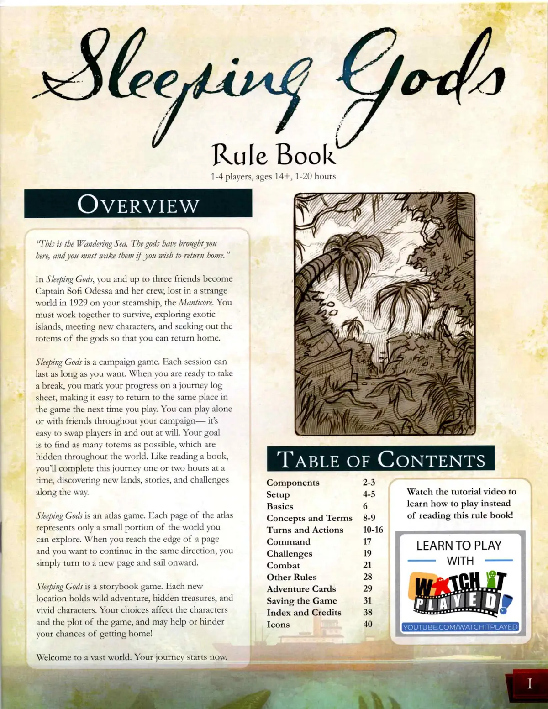
📝 第 1 页 AI 机翻对照（点击展开）
ods
规则书
1-4名玩家，14岁以上，1-20小时
概述
这是流浪之海。众神将你带到这里，如果你想回家，就必须唤醒他们。
在《沉睡之神》中，你和最多三位朋友将扮演索菲娅·奥德萨船长和她的船员，于1929年在你们的蒸汽船"曼蒂科尔"号上迷失在一个陌生的世界里。你们必须共同努力以求生存，探索异国岛屿，结识新角色，寻找众神的图腾，这样你们才能回家。
《沉睡之神》是一款战役游戏。每局游戏可以持续任意长的时间。当你准备休息时，你在旅程记录表上标记你的进度，这样下次游戏时很容易回到相同的地方。在整个战役中，你可以独自游戏或与朋友一起游戏——随时可以随意更换玩家。你的目标是找到尽可能多的图腾，这些图腾隐藏在世界各地。就像读书一样，你会一次花一到两个小时完成这段旅程，沿途发现新的土地、故事和挑战。
观看教程视频来学习如何游戏，而不是阅读这本规则书！
《沉睡之神》是一本地图集游戏。地图集的每一页只代表你可以探索的世界的一小部分。当你到达一页的边缘并想继续朝同一方向前进时，只需翻到新页继续航行即可。
《沉睡之神》是一款故事书游戏。每个新地点都充满奇妙的冒险、隐藏的宝藏和生动的角色。你的选择会影响游戏中的角色和情节，可能会帮助你或阻碍你回家的机会！
欢迎来到广阔的世界。你的旅程现在开始。
目录
组件 2-3
设置 4-5
基础 6
学习游戏 8-9
概念和术语 10-16
回合和行动 17
指挥 19
挑战 21
战斗 21
其他规则 28
冒险卡牌 29
保存游戏 31
索引和致谢 38
图标 40
YOUTUBE.COM/WATCHITPLAYED
游戏组件
- 1个游戏版图
- 4个玩家指示物
- 1个起始玩家指示物
- 4个个人版图
- 24个米宝（每种颜色6个）
- 1个第一玩家指示物
- 1个资源标记（每种颜色1个）
- 1个分数标记（每种颜色1个）
- 1个起始玩家标记
- 1个骰子
- 1个布袋（包含49个板块）
- 1个起始板块
- 1个起始标记
- 1个游戏结束标记
- 1个分数板
- 1个起始玩家板
游戏版图
游戏版图由49个板块组成，这些板块被放入布袋中。在游戏开始时，随机抽取一个板块作为起始板块，并将其放置在桌子中央。这个板块上有特殊标记，表示它是游戏的起始点。
个人版图
每个玩家获得一个个人版图。个人版图上有三个区域：资源区域、分数区域和特殊能力区域。
玩家指示物
每个玩家获得一个与自己颜色相同的玩家指示物。这些指示物用于在游戏版图上标记玩家的位置。
起始玩家指示物
起始玩家指示物用于标记当前回合的起始玩家。在游戏开始时，随机决定一个玩家成为起始玩家，并将起始玩家指示物放在该玩家的个人版图上。
资源标记
资源标记用于表示玩家拥有的资源数量。每个玩家获得一个与自己颜色相同的资源标记。
分数标记
分数标记用于表示玩家的分数。每个玩家获得一个与自己颜色相同的分数标记。
起始玩家标记
起始玩家标记用于标记谁是当前回合的起始玩家。在游戏开始时，随机决定一个玩家成为起始玩家，并将起始玩家标记放在该玩家的个人版图上。
骰子
骰子用于决定玩家的行动顺序。在游戏开始时，所有玩家掷骰子，点数最高的玩家成为起始玩家。
布袋
布袋包含49个板块。在游戏开始时，这些板块被放入布袋中，然后随机抽取一个作为起始板块。
起始板块
起始板块是游戏的起点。它被放置在桌子中央，其他板块将围绕它展开。
起始标记
起始标记用于标记游戏的起始位置。它被放在起始板块上。
游戏结束标记
游戏结束标记用于表示游戏的结束。当游戏结束标记被放置到版图上的特定位置时，游戏结束。
分数板
分数板用于记录玩家的分数。在游戏结束时，玩家使用分数板计算自己的最终分数。
起始玩家板
起始玩家板用于记录谁是当前回合的起始玩家。在游戏开始时，随机决定一个玩家成为起始玩家，并将起始玩家板放在该玩家的个人版图上。
游戏目标
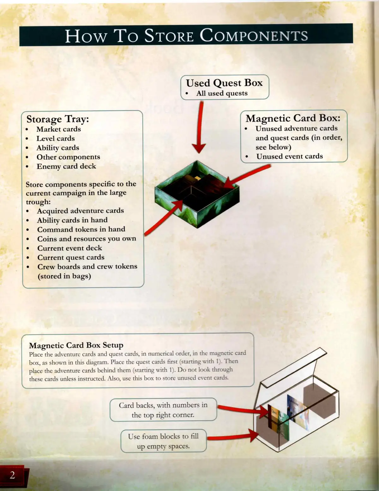
📝 第 2 页 AI 机翻对照（点击展开）
如何储存 组件
已使用的任务盒
所有已使用的任务
储物托盘： 磁性卡盒：
市场卡牌 未使用的冒险卡牌
和任务卡牌（按顺序， 等级卡牌
见下文） 能力卡牌
其他组件 未使用的事件卡牌
敌对卡牌牌库
将特定于当前战役的组件储存在大槽中：
已获得的冒险卡牌
手中的能力卡牌
手中的指挥指示物
你拥有的硬币和资源
当前事件牌库
当前任务卡牌
船员板和船员指示物
（储存在袋子中）
磁性卡盒设置
如图所示，将冒险卡牌和任务卡牌按数字顺序放入磁性卡盒中。先放置任务卡牌（从1开始）。然后在它们后面放置冒险卡牌（从1开始）。除非有指示，否则不要查看这些卡牌。也使用这个盒子来储存未使用的事件卡牌。
卡牌背面，右上角有数字。
使用泡沫块填满空隙。
游戏的目标是通过放置米宝和收集资源来获得最多的胜利点（VP）。游戏在特定条件下结束，此时玩家计算自己的胜利点数，拥有最多胜利点的玩家获胜。
游戏准备
- 将游戏版图的所有49个板块放入布袋中。
- 随机抽取一个板块作为起始板块，并将其放置在桌子中央。
- 将起始标记放在起始板块上。
- 每个玩家选择一个颜色，并获得相应颜色的个人版图、玩家指示物、资源标记、分数标记和6个米宝。
- 将起始玩家指示物和起始玩家板放在起始玩家旁边。
- 将游戏结束标记放在版图上的指定位置。
- 将分数板放在桌子中央，方便所有玩家查看。
游戏回合
游戏由多个回合组成，每个回合包括以下阶段：
- 起始玩家阶段：确定当前回合的起始玩家。
- 板块放置阶段：玩家放置板块。
- 米宝放置阶段：玩家放置米宝。
- 资源收集阶段：玩家收集资源。
- 分数计算阶段：玩家计算分数。
- 游戏结束检查：检查游戏是否结束。
起始玩家阶段
在游戏开始时，随机决定一个玩家成为起始玩家。在后续的回合中，起始玩家按照顺时针顺序轮换。
板块放置阶段
- 当前玩家从布袋中随机抽取一个板块。
- 玩家必须将板块放置在版图上，使其与至少一个已有板块相邻。
- 板块必须按照正确的方向放置，确保边缘匹配。
- 如果玩家无法放置板块，则必须跳过此阶段。
米宝放置阶段
- 玩家可以选择放置一个米宝到版图上的一个区域。
- 米宝必须放置在玩家刚刚放置的板块上，或者与该板块相邻的板块上。
- 每个区域只能放置一个米宝。
- 如果玩家选择不放置米宝，则必须跳过此阶段。
资源收集阶段
- 玩家收集与自己米宝所在区域相关的资源。
- 资源可以是食物、木材、石头或金子。
- 玩家将资源标记移动到相应的资源区域。
- 如果玩家没有足够的资源来执行某个行动，则必须跳过该行动。
分数计算阶段
- 玩家计算自己在当前回合获得的分数。
- 分数可以来自完成区域、收集资源或特殊能力。
- 玩家将分数标记移动到相应的分数区域。
- 所有玩家同时计算分数。
游戏结束检查
- 当游戏结束标记被放置到版图上的特定位置时，游戏结束。
- 或者，当所有板块都被放置完毕时，游戏结束。
- 游戏结束时，玩家计算自己的最终分数。
- 拥有最多胜利点的玩家获胜。
特殊能力
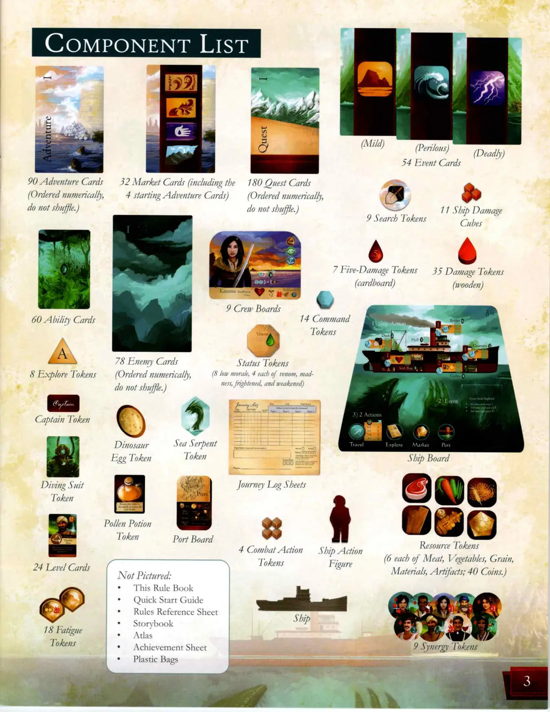
📝 第 3 页 AI 机翻对照（点击展开）
组件清单
54张事件卡
90张冒险卡
32张市场卡（包括4张起始冒险卡）
180张任务卡（按数字顺序排列，不要洗牌）
11张船只伤害立方体
9个搜索指示物
7张五点伤害指示物
35张伤害指示物
1艘船（纸板）
4个船员板
60张能力卡
14个指挥台指示物
船体状态指示物
78张敌人卡
8个探索指示物（按数字顺序排列，不要洗牌）
（8点低士气，每种毒素、恐惧、虚弱各4点）
2个行动指示物
船长指示物
恐龙蛋指示物
海蛇指示物
旅行指示物
探索指示物
市场指示物
港口指示物
潜水服指示物
旅行日志板
花粉药水指示物
港口板
4个战斗行动指示物
资源指示物（每种肉类、蔬菜、谷物、材料、工艺品各6个，40个金币）
24张等级卡
人物
未显示：
规则书
快速入门指南
规则参考表
故事书
疲劳指示物 x18
成就表
9个协同指示物
塑料袋
某些板块和米宝具有特殊能力，可以在游戏过程中提供额外的好处。这些能力在相关板块或米宝上描述。
Rafael
当激活时，获得2个阻挡。
Mac'Mara Johnson
0 25
+4
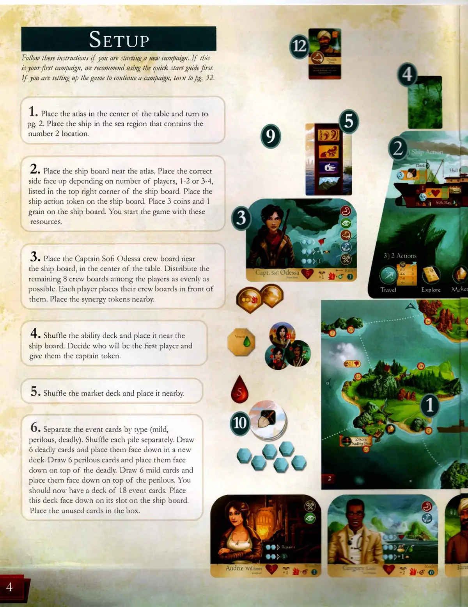
📝 第 4 页 AI 机翻对照（点击展开）
设置
如果您要开始一个新的战役，请遵循这些说明。如果是您的第一个战役，我们建议您先使用快速入门指南。如果您要设置游戏以继续一个战役，请翻到第32页。
- 将船只放置在包含数字2位置的海洋区域。根据玩家数量（1-2人或3-4人），将船体面朝上放置，如船板右上角所示。将船只行动指示物放在船板上。在船板上放置3个金币和1个谷物。您开始游戏时拥有这些资源。
- 将船长索菲·奥德萨船员板放在船板旁边，位于桌子中央。将剩余的8个船员板尽可能平均地分给玩家。每位玩家将他们的船员板放在自己面前。将协同指示物放在附近。
- 洗混能力牌库并将其放在船板附近。决定谁将成为起始玩家，并将船长指示物交给他们。
- 洗混市场牌库并将其放在附近。
- 按类型（温和、危险、致命）分开事件卡。分别洗混每堆牌。抽取6张致命卡并将其面朝下放在一个新的牌库中。抽取6张危险卡并将其面朝下放在致命卡上方。抽取6张温和卡并将其面朝下放在危险卡上方。您现在应该有一叠18张的事件卡。将这叠牌面朝下放在船板上的指定位置。未使用的卡片放回盒中。
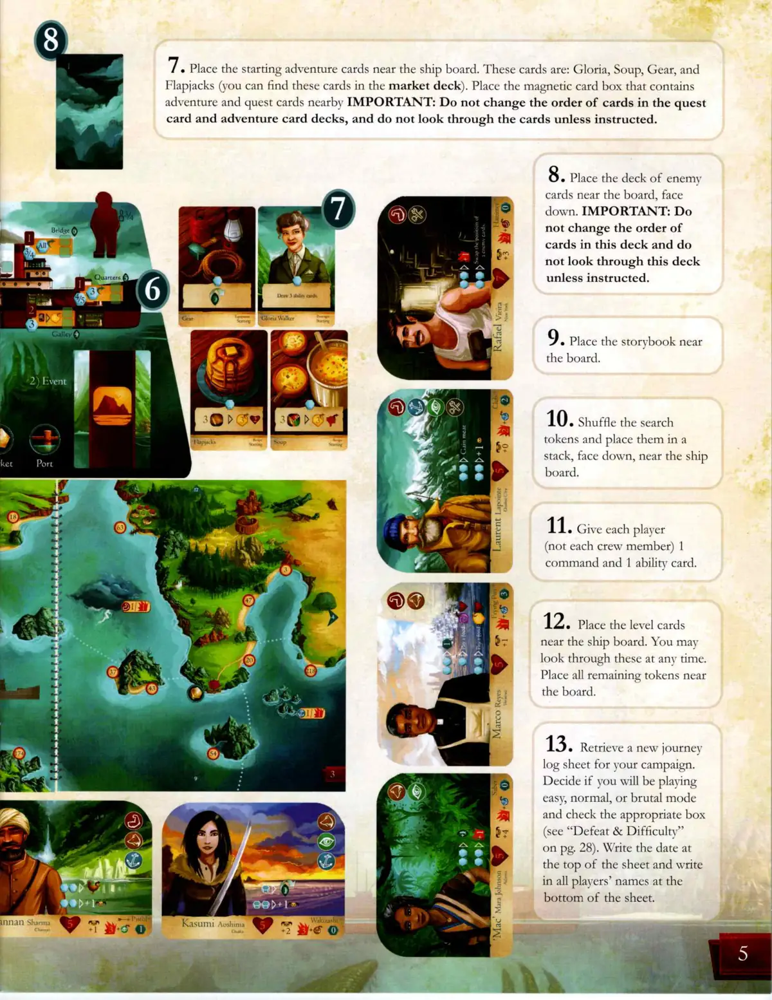
📝 第 5 页 AI 机翻对照（点击展开）
煎饼（你可以在牌库中找到这些卡牌）。将装有冒险和任务卡牌的磁力卡盒放在附近。重要：不要改变任务卡和冒险卡牌牌库中的顺序，除非有指示，否则不要查看这些卡牌。
- 将敌人卡牌牌库放在版图附近，牌面朝下。重要：不要改变这个牌库中卡牌的顺序，除非有指示，否则不要查看这个牌库。
- 将故事书放在版图附近。
- 洗混搜索指示物，并将它们叠成一堆，牌面朝下，放在版图附近。
- 给每位玩家（不是每位船员）1张指挥卡和1张能力卡。
- 将等级卡放在船版图附近。你可以随时查看这些卡牌。将所有剩余的指示物放在版图附近。
- 为你的战役获取一份新的航行日志表。决定你将进行简单、普通或残酷模式，并勾选相应的方框（参见第28页的"失败与难度"）。在表格顶部写下日期，在表格底部写下所有玩家的名字。
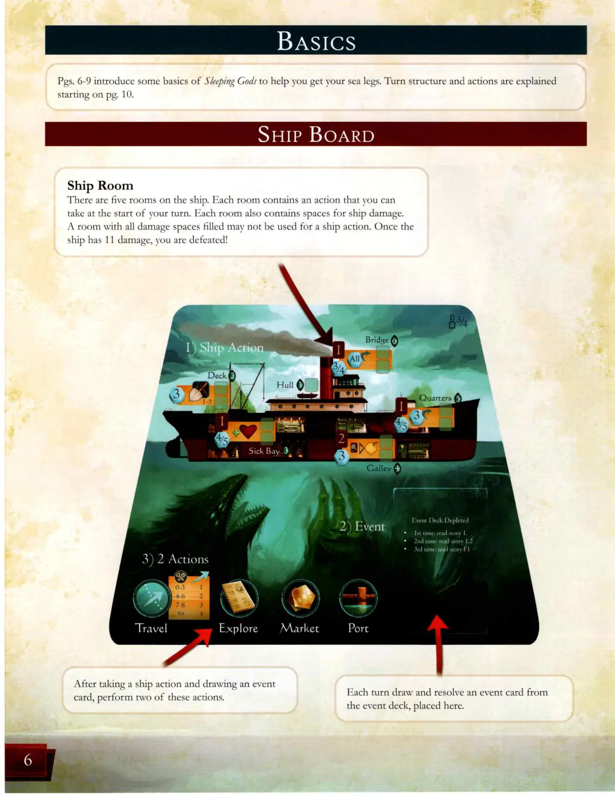
📝 第 6 页 AI 机翻对照（点击展开）
基础知识
第6-9页介绍了《沉睡之神》的一些基础知识，帮助你熟悉游戏。回合结构和行动从第10页开始解释。
船版图
船舱
船上有五个舱室。每个舱室都包含一个你可以在回合开始时执行的行动。每个舱室还包含船体损伤的空间。一个所有损伤空间都已填满的舱室不能用于执行船行动。一旦船受到11点伤害，你就被击败了！
驾驶舱
船行动
牌库
舱室
医务室
厨房
事件牌库耗尽 2)事件
第一次：阅读故事I。
第二次：阅读故事[.2
第三次：阅读故事F1
- 2 行动
0-3
4-6
7-8
9+
航行 探索 市场 港口
在执行船行动和抽取事件卡牌后，每个回合从事件牌库抽取并解决一张事件卡牌，放在这里。执行这两个行动之一。
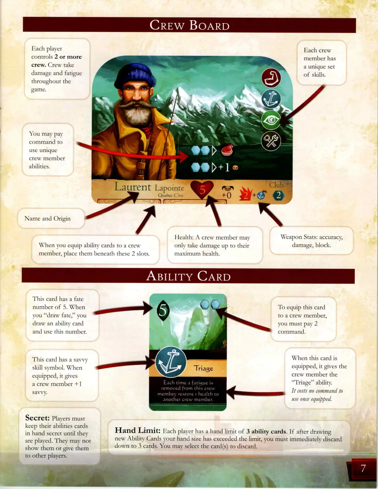
📝 第 7 页 AI 机翻对照（点击展开）
船员版图
每位玩家控制2名或更多船员。船员在游戏过程中会受到伤害和疲劳。
每名船员拥有一套独特的技能。
你可以支付+1指挥值来使用独特的船员能力。
姓名和来源
俱乐部 Laurent Lapointe
? #2
魁北克市 +0
当您将能力卡牌装备给船员时，请将它们放在这两个槽位下方。
船员最多只能承受等于其最大生命值的伤害。
能力卡
这张卡牌的命运值为5。当您"抽取命运"时，您会抽取一张能力卡并使用这个数值。
这张卡牌有敏锐技能符号。当装备时，它为船员提供+1敏锐。
每次从该船员身上移除1点疲劳时，恢复1点生命值给另一名船员。
秘密：玩家必须将他们的能力卡牌在手牌中保密，直到它们被打出。他们不能展示或给其他玩家看。
手牌上限：每位玩家有3张能力卡的手牌上限。如果在抽取新的能力卡后，您的手牌数量超过了上限，您必须立即弃牌至3张。您可以选择要弃掉的卡牌。
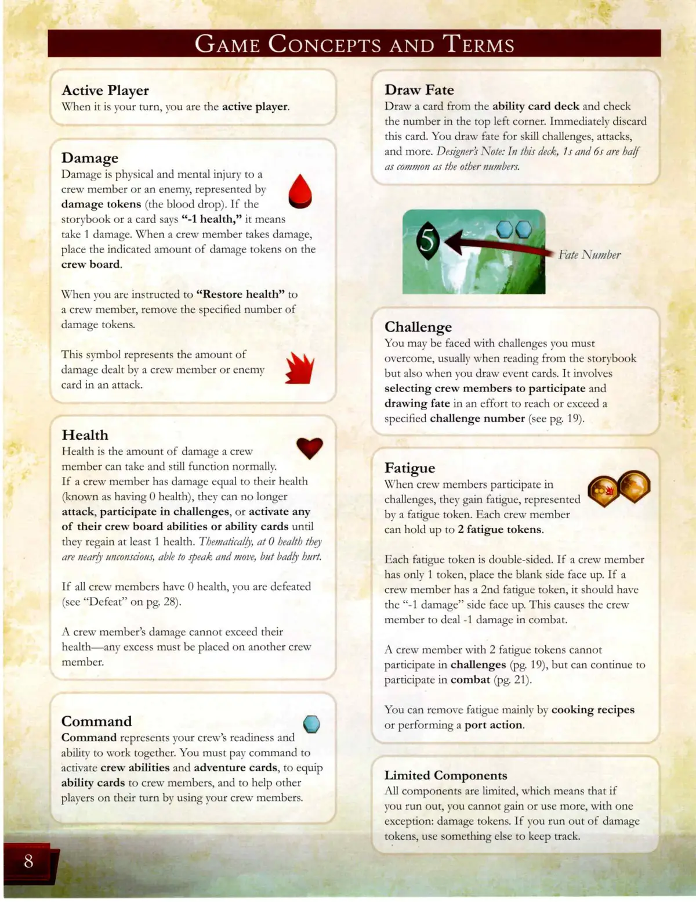
📝 第 8 页 AI 机翻对照（点击展开）
游戏概念与术语
主动玩家 抽命运牌
轮到你时，你就是主动玩家。从能力牌库中抽一张牌，检查左上角的数字。立即弃掉这张牌。你为技能挑战、攻击、伤害等抽取命运牌。设计师注：在这副牌中，1和6的出现频率是其他数字的一半。
伤害是对船员或敌人的身体和精神伤害，由伤害指示物（血滴形状）表示。如果故事书或卡牌说"失去1点生命值"，意味着承受1点伤害。当船员承受伤害时，将指定数量的伤害指示物放在船员版图上。
当被指示"恢复生命值"给船员时，移除指定数量的伤害指示物。 挑战
这个符号代表船员或敌人卡牌在攻击中造成的伤害量。 你可能会面临必须克服的挑战，通常是在阅读故事书时，
也会在你抽到事件卡时。这包括选择船员参与，
并抽取命运牌，努力达到或超过指定的挑战数字（见第19页）。
生命值
生命值是船员可以承受的伤害量，同时仍能正常运作。 疲劳
如果船员承受的伤害等于其生命值（称为0生命值），他们无法再 当船员参与挑战时，他们会获得疲劳，由疲劳指示物表示。
攻击、参与挑战或激活任何船员版图能力或能力卡，直到他们 每个船员最多可持有2个疲劳指示物。
恢复至少1点生命值。从主题上讲，0生命值时他们几乎失去
意识，能够说话和移动，但伤势严重。 每个疲劳指示物是双面的。如果船员只有1个指示物，将空白面朝上放置。如果
船员有第2个疲劳指示物，它应该将"-1伤害"面朝上。这会导致船员
在战斗中造成-1伤害。
如果所有船员都是0生命值，你就被击败了 有2个疲劳指示物的船员不能
（见第28页"被击败"）。 参与挑战（第19页），但可以继续参与战斗（第21页）。
你主要通过烹饪食谱或执行港口行动来移除疲劳。
指令
指令代表你的船员的准备程度和协作能力。你必须支付指令来激活船员能力和冒险卡，将能力牌装备给船员，并在其他玩家的回合通过使用你的船员来帮助他们。
有限组件
所有组件都是有限的，这意味着如果你用完了，就无法再获得更多，有一个例外：伤害指示物。如果你用完了伤害指示物，使用其他东西来追踪。
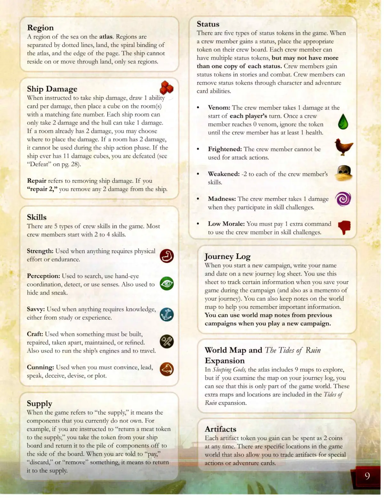
📝 第 9 页 AI 机翻对照（点击展开）
状态 区域
游戏中有五种状态指示物。当 地图集上的一个海洋区域。区域由虚线
船员获得状态时，将相应的 分隔，包括陆地、地图集的螺旋装订
指示物放在其船员版上。每个船员 处和页面边缘。船只不能
可以拥有多个状态指示物，但不能拥有 栖息于或穿过陆地，只能在海区移动。
同一状态的多份副本。船员在故事和战斗中获得 船只损伤
状态指示物。船员可以通过角色和冒险 当被指示承受船只损伤时，每1点损伤抽取1张能力卡，
卡牌能力移除状态指示物。 然后在具有匹配命运数字的房间上放置一个方块。每个船
只房间只能承受2点损伤，船体只能承受1点损伤。如果
一个房间已经有2点损伤，你可以选择将损伤放置在何处。
如果房间有2点损伤，在船只行动阶段不能使用。如果船
只累计有11个损伤方块，你被击败（参见第28页的"被
击败"）。
修复是指移除船只损伤。如果你 "修复2"，你可以从船只上移除任意2点损伤。
毒液：船员在每个玩家 技能
回合开始时承受1点损伤。一旦船员 游戏中有5种船员技能。大多数
达到O毒液，忽略该指示物，直到船员 船员开始时有2到4个技能。
至少有1点生命值。
恐惧：船员不能被 力量：用于任何需要体力或耐力的情况。
用于攻击行动。
虚弱：船员所有技能-2。
疯狂：船员参与技能挑战时承受1点损伤。
低士气：在技能挑战中使用船员时，你必须多支付1点指挥。
感知：用于搜索、使用手眼协调、探测或使用感官。也用于隐藏和潜行。
精明：用于任何需要知识的情况，无论是来自学习还是经验。
工艺：用于建造、修理、拆卸、维护或精炼某物。也用于运行船只引擎和航行。
狡猾：当你必须说服、领导、说话、欺骗、设计或做其他类似事情时使用。
航行日志
当你开始一个新战役时，在新的航行日志表上写下你的名字和日期。你使用这张表格来保存游戏时跟踪某些信息（也作为你旅程的纪念品）。你也可以在世界地图上做笔记，帮助你记住重要信息。当你玩一个新战役时，你可以使用之前战役的世界地图笔记。
世界地图与《毁灭之潮》扩展
在《沉睡之神》中，地图集包含9张可探索的地图，但如果你查看航行日志上的地图，你会发现这只是游戏世界的一部分。这些额外的地图和位置包含在《毁灭之潮》扩展中。
当游戏提到"补给"时，它指的是你当前不拥有的组件。例如，如果你被指示"返还一个肉指示物"
"支付到供应区"，你从你的飞船板块上拿取指示物，并将其归还到版图边上的组件堆中。每当你获得一个文物指示物，你可以在任何时候将其当作2枚金币使用。游戏世界中有特定的位置，也允许你将文物交易为特殊行动或冒险卡牌。当你被要求"支付"、"弃置"或"移除"某物时，这意味着将其归还到供应区。
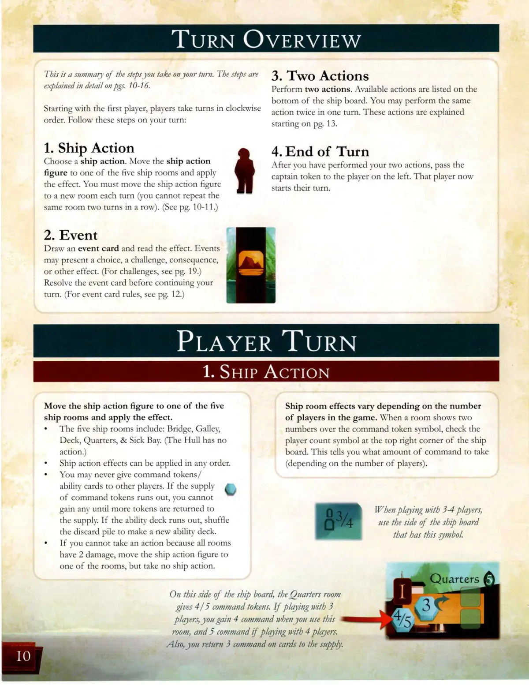
📝 第 10 页 AI 机翻对照（点击展开）
回合概述
这是你在自己回合中需要执行的步骤概述。这些步骤在第10-16页有详细说明。
从起始玩家开始，玩家按顺时针顺序轮流进行回合。在你的回合中遵循以下步骤：
1. 船只行动
选择一个船只行动。将船只行动指示物移动到五个船舱中的一个并应用效果。你必须每个回合将船只行动指示物移动到一个新舱室（你不能连续两回合重复同一个舱室）。（参见第10-11页）
2. 事件
抽取一张事件卡并阅读效果。事件可能提供选择、挑战、后果或其他效果。（关于挑战，参见第19页）在继续你的回合前解决事件卡。（关于事件卡规则，参见第12页）
3. 两个行动
执行两个行动。可用行动列在船只版图的底部。你可以在一个回合中执行相同的行动两次。这些行动从第13页开始有详细说明。
4. 回合结束
在你执行完两个行动后，将船长指示物传递给左侧的玩家。该玩家现在开始他们的回合。
玩家回合
1. 船只行动
将船只行动指示物移动到五个船舱中的一个并应用效果。
五个船舱包括：桥、甲板舱、船舱、医务室。（船体没有行动）
船只行动效果可以按任何顺序应用。
你绝不能将指挥指示物/能力卡给予其他玩家。如果指挥指示物供应耗尽，在更多指示物返回供应之前，你无法获得任何指示物。如果能力牌库耗尽，洗弃牌堆来制作新的能力牌库。
如果所有舱室都有2点损伤，无法执行行动，则将船只行动指示物移动到其中一个舱室，但不执行任何船只行动。
船舱
船舱效果根据游戏中的玩家数量而变化。当一个舱室显示两个数字在指挥指示物符号上方时，检查船只版图右上角的玩家数量符号。这告诉你应该获得多少指挥（取决于玩家数量）。
03/4 当3-4名玩家游戏时
使用船只版图上有此符号的一面。
船舱
在这面船只版图上，船舱给予4/5个指挥指示物。如果3名玩家游戏，当你使用这个舱室时获得4个指挥，如果是4名玩家则获得5个指挥。
此外，你将3张指挥卡返还到供应中。
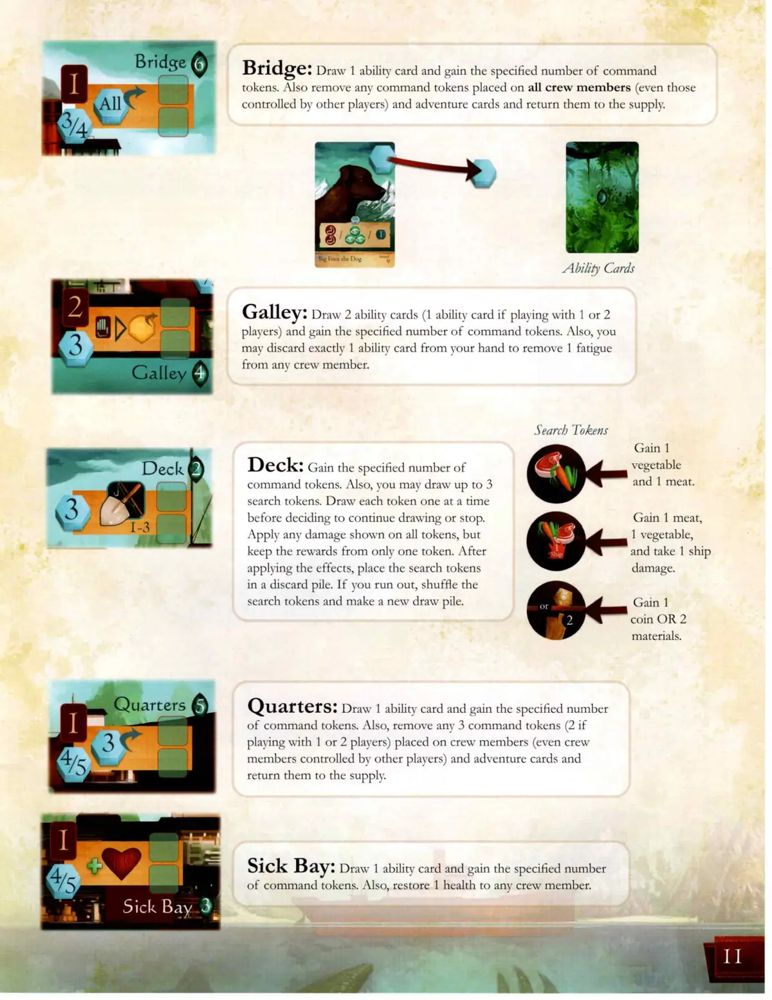
📝 第 11 页 AI 机翻对照（点击展开）
桥梁
桥梁：摸1张能力牌并获得指定数量的指挥指示物。同时，移除所有船员（包括其他玩家控制的船员）和冒险牌上放置的任何指挥指示物，并将它们归还到供应区。
大脚狗
能力牌
大划艇
大划艇：摸2张能力牌（如果1人或2人游戏则摸1张能力牌）并获得指定数量的指挥指示物。此外，你可以从手牌中弃掉恰好1张能力牌，以移除任意1名船员的1点疲劳。
搜索指示物
获得1个指挥指示物。
牌库
牌库：获得指定数量的指挥指示物。此外，你可以摸最多3个搜索指示物。每次摸一个指示物，在决定继续摸牌或停止之前。获得1个肉类，1-3个蔬菜，并承受1点船只伤害。应用所有指示物上显示的伤害，但只保留一个指示物的奖励。应用效果后，将搜索指示物放入一个弃牌堆。如果用完，洗混搜索指示物并制作一个新的摸牌堆。
获得1个金币或2个资源。
船舱
船舱：摸1张能力牌并获得指定数量的指挥指示物。此外，移除任意3个指挥指示物（如果1人或2人游戏则移除2个）放置在船员（包括其他玩家控制的船员）和冒险牌上，并将它们归还到供应区。
医务室
医务室：摸1张能力牌并获得指定数量的指挥指示物。此外，恢复任意1名船员的1点生命值。
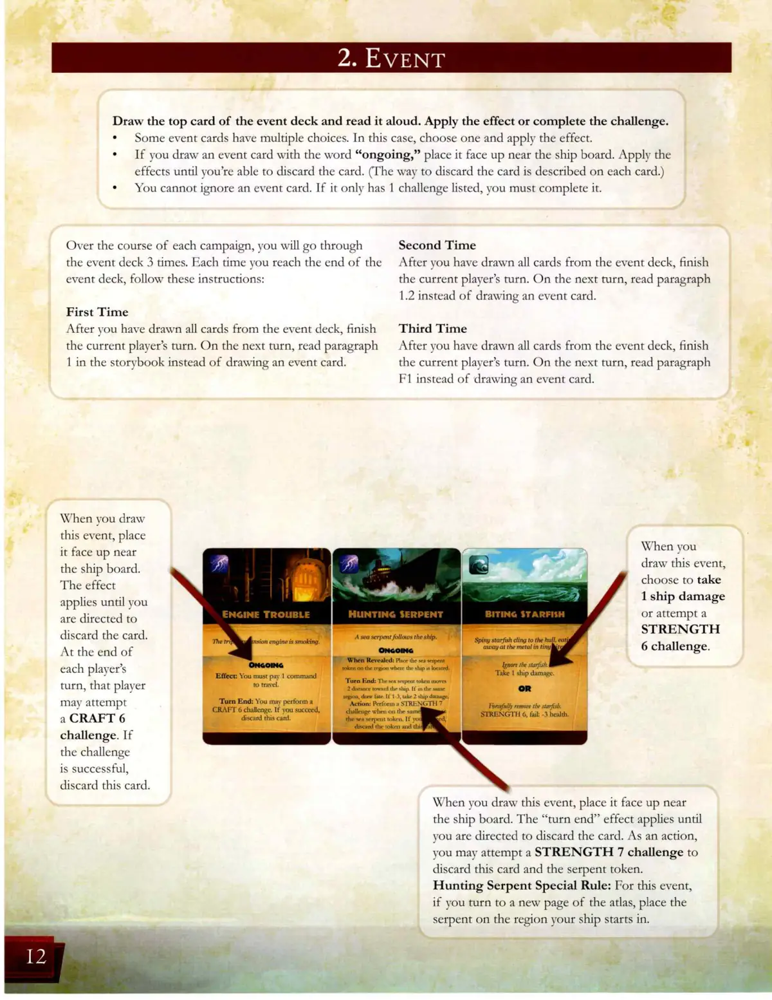
📝 第 12 页 AI 机翻对照（点击展开）
2. 事件
从事件牌库顶抽一张牌并大声朗读。应用效果或完成挑战。
有些事件牌有多个选项。在这种情况下，选择一个并应用效果。
如果你抽到一张标有"持续"(ongoing)的事件牌，将其面朝上放在飞船版图旁。应用效果直到你能够弃掉这张牌。弃牌方式在每张牌上都有描述。
你不能忽略事件牌。如果只有1个挑战，你必须完成它。
在每场战役过程中，你会将事件牌库过3遍。每次到达事件牌库末尾时，遵循以下说明：
第一遍
当你抽完事件牌库的所有牌后，结束当前玩家的回合。在下一回合，阅读故事书中的第1段，而不是抽事件牌。
第二遍
当你抽完事件牌库的所有牌后，结束当前玩家的回合。在下一回合，阅读第1.2段，而不是抽事件牌。
第三遍
当你抽完事件牌库的所有牌后，结束当前玩家的回合。在下一回合，阅读F1段，而不是抽事件牌。
当你抽到这个事件时，选择承受1点飞船伤害或尝试一个6点力量挑战。如果你成功，弃掉这个指示物和这张牌。
引擎故障
蒸汽发动机在冒烟。在每个玩家的回合结束时，该玩家可以尝试一个力量6挑战。如果成功，弃掉这个指示物和这张牌。
猎蛇
当你抽到这个事件时，将其面朝上放在飞船版图旁。"回合结束"效果持续应用，直到你被指示弃掉这张牌。作为一个行动，你可以尝试一个力量7挑战来弃掉这张牌和蛇形指示物。
猎蛇特殊规则：对于这个事件，如果你翻到地图集的新一页，将蛇放在你的飞船起始的区域。
咬人的海星
多刺的海鱼附着在船壳上，一点点啃食金属。在每个玩家的回合结束时，如果玩家在同一区域，命运骰子掷出1-3，则承受2点飞船伤害。或者，作为一个行动，你可以执行一个力量6挑战。如果你成功，强制移除海鱼。
持续
当你抽到这个事件时，将其面朝上放在飞船版图旁。效果持续应用，直到你被指示弃掉这张牌。
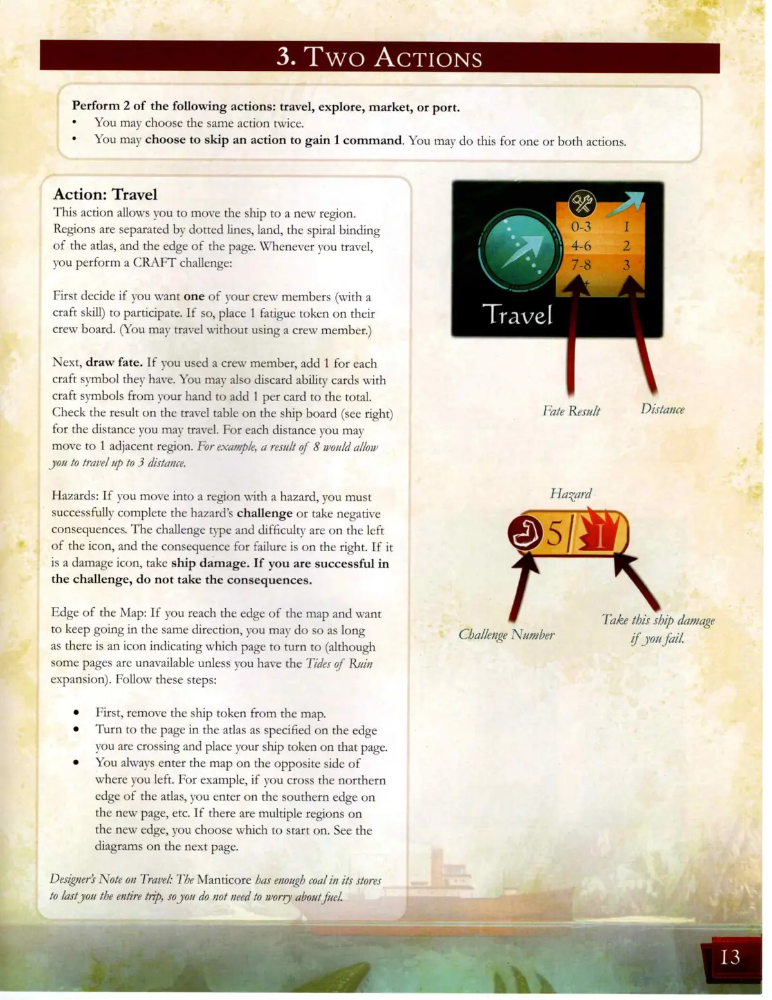
📝 第 13 页 AI 机翻对照（点击展开）
3. 两个行动
执行以下两项行动之一：旅行、探索、市场或港口。
你可以选择相同的行动两次。
你可以选择跳过一个行动以获得1个指令。你可以对一项或两项行动这样做。
行动：旅行
此行动允许你将船只移动到一个新区域。
区域由虚线、陆地、地图集的螺旋装订和页面边缘分隔。每当旅行时，你需要进行一次工艺挑战：
首先决定是否要让你的船员之一（具有工艺技能）参与。如果是，在其船员板上放置1个疲劳标记。（你也可以不使用船员进行旅行。）
接下来，抽取命运。如果你使用了船员，为他们每个工艺符号加1。你也可以从手牌中弃掉带有工艺符号的能力卡，每张卡加1到总数中。
根据你在船板上的旅行表（见右侧）检查结果，确定你可以移动的距离。每点距离你可以移动到1个相邻区域。例如，结果为8将允许你最多移动3个距离。
危险
如果你移动到一个有危险的区域，你必须成功完成该危险挑战，否则将面临负面后果。挑战类型和难度在图标左侧，失败后果在右侧。如果是伤害图标，则受到船只伤害。如果你成功完成挑战，则不会受到后果。
地图边缘
如果你到达地图边缘并希望继续沿同一方向前进，只要有一个图标指示要翻到哪一页，你就可以这样做（尽管有些页面在未拥有《毁灭之潮》扩展时不可用）。请遵循以下步骤：
首先，从地图上移除船只标记。
翻到地图集中指定的页面，并将你的船只标记放在该页面上。
你总是从离开位置的对侧进入。例如，如果你穿过地图集的北部边缘，你将在新页面的南部边缘进入，等等。如果新边缘有多个区域，你可以选择从哪个区域开始。请参见下一页的图示。
关于旅行的设计师注释
曼蒂科尔号在其煤舱中有足够的煤炭，可以在最终完成航行。
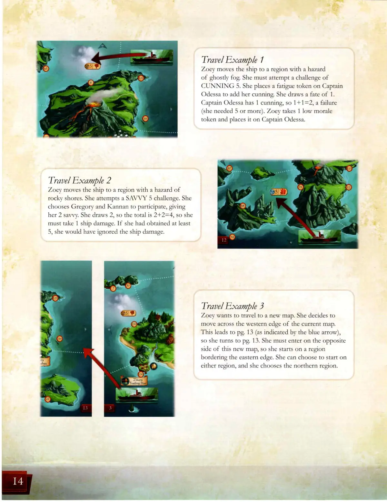
📝 第 14 页 AI 机翻对照（点击展开）
旅行示例1
佐伊将船移动到一个有幽灵雾危险的区域。她必须尝试一个狡诈5的挑战。她在奥德赛船长身上放置一个疲劳指示物来增加她的狡诈。她抽到了一个命运值1。奥德赛船长有1点狡诈，所以1+1=2，挑战失败（她需要5或更高）。佐伊获得1个低士气指示物，并将其放在奥德赛船长身上。
旅行示例2
佐伊将船移动到一个有崎岖海岸危险的区域。她尝试一个机智5的挑战。她选择格雷戈里和卡南参与，为她提供了2点机智。她抽到了2，所以总数是2+2=4，因此她必须承受1点船只伤害。如果她至少获得了5，她就可以忽略船只伤害。
旅行示例3
95 佐伊想要前往一张新地图。她决定穿越当前地图的西边缘。这引导她到第13页（如蓝色箭头所示），所以她翻到第13页。她必须从这张新地图的对面进入，所以她开始在一个靠近东边缘的区域。她可以选择任一区域开始，她选择了北部区域。
Zikura i贸易站
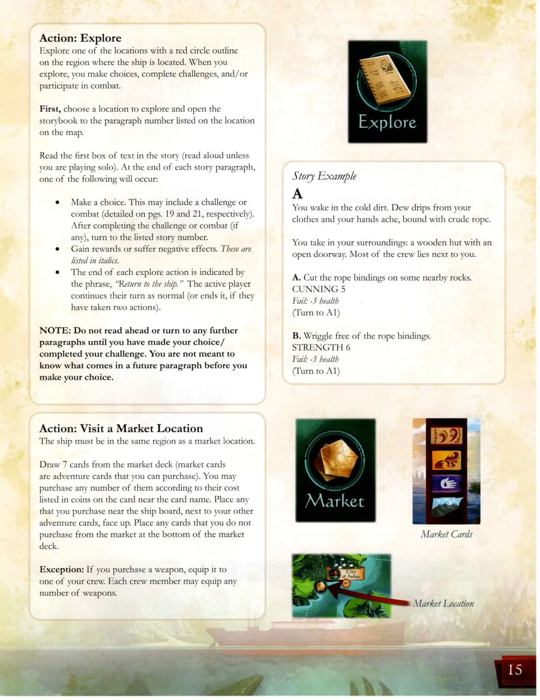
📝 第 15 页 AI 机翻对照（点击展开）
行动：探索
探索飞船所在区域中带有红色圆圈轮廓的一个地点。当你探索时，你需要做出选择、完成挑战和/或参与战斗。
首先，选择一个要探索的地点，并翻开故事书到该地点在地图上列出的段落编号。
阅读故事中的第一个文本框（除非你在进行单人游戏，否则请大声朗读）。在每个故事段落的结尾，将会发生以下情况之一：
故事示例
A
做出选择。这可能包括挑战或战斗（分别详见第19页和第21页）。
你在冰冷的泥土中醒来。露水从你的衣服上滴落，你的双手因被粗绳捆绑而疼痛。
你环顾四周：一个带有敞开门的木屋。大多数船员躺在你的旁边。
完成挑战或战斗（如果有）后，转向列出的故事编号。
获得奖励或遭受负面效果。这些内容以斜体列出。
每个探索行动的结束以"返回飞船"这句话为标志。当前玩家继续他们的回合（如果他们已经进行了两个行动，则结束回合）。
注意：在你做出选择/完成挑战之前，不要向前阅读或转向任何后续段落。你不应该在做出选择前就知道未来段落的内容。
行动：访问市场地点
飞船必须与市场地点位于同一区域。
从市场牌库中抽取7张卡牌（市场卡牌是可以购买的冒险卡牌）。你可以根据卡牌名称附近列出的金币成本购买任意数量的卡牌。将购买的卡牌放在飞船板旁边，面朝上，与其他冒险卡牌放在一起。将未从市场购买的卡牌放在市场牌库的底部。
例外：如果你购买了一件武器，请将其装备给你的船员之一。每个船员可以装备任意数量的武器。
市场地点
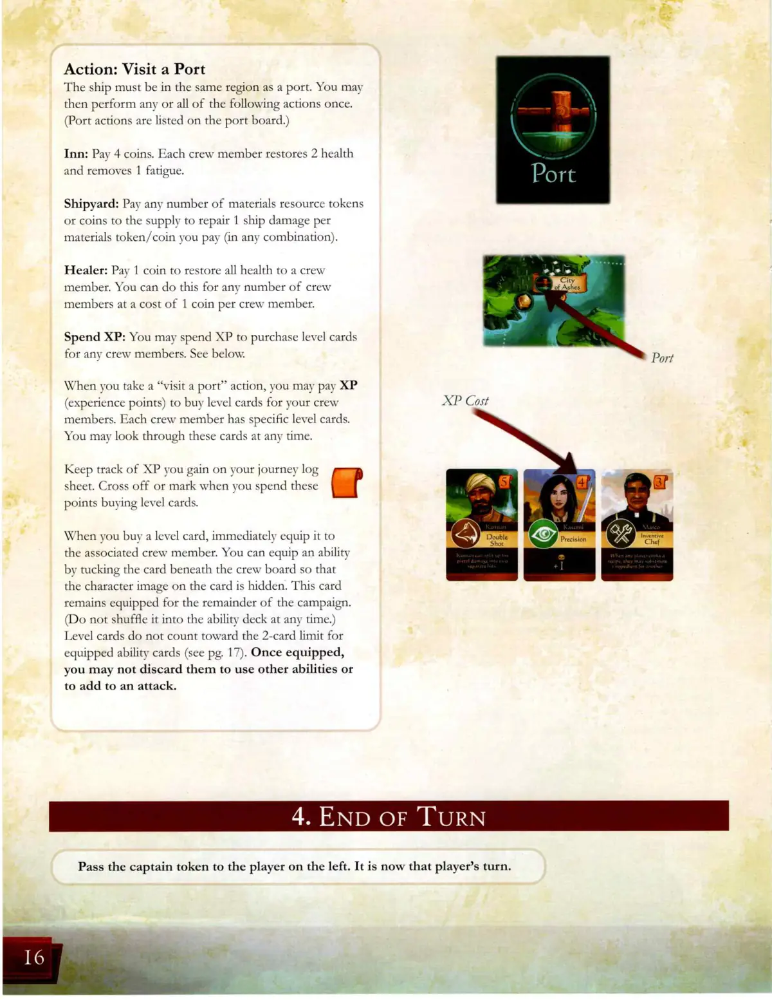
📝 第 16 页 AI 机翻对照（点击展开）
行动：访问港口
船只必须与港口位于同一区域。然后你可以执行以下任意或全部行动各一次。
（港口行动列在港口版图上。）
旅店：支付4枚金币。每位船员恢复2点生命值并移除1点疲劳值。 港口
造船厂：支付任意数量的资源指示物。每支付1个资源指示物或1枚金币，你的船只获得1点耐久度（可任意组合）。 城市
治疗师：支付1枚金币来恢复一名船员的所有生命值。你可以为任意数量的船员执行此操作，每名船员花费1枚金币。 港口
消耗经验值：你可以消耗经验值来为任何船员购买等级卡。见下文。 经验值消耗
（经验值）来为你的船员购买等级卡。每名船员有特定的等级卡。你可以随时查看这些卡片。在旅程日志表上记录你获得的经验值。当你使用这些点购买等级卡时，划掉或标记它们。
K.m.in K.asumi Marco 当你购买一张等级卡时，立即将其装备到
双倍 精确 发明 射击
相关船员身上。你可以通过将卡片插入船员板下方来装备一项能力， Kamnun.can olit up his 当任何玩家烹饪时，
使卡片上的角色图像被隐藏。这张卡片在剩余的战役中保持装备状态。 分离 1E 给其他
（任何时候不要将其洗入能力牌库中）。 玩家造成伤害
等级卡不计入已装备能力卡的2张限制（见第17页）。一旦装备，你不能将其弃掉以使用其他能力或增加攻击力。
4. 回合结束
将船长指示物传递给左侧的玩家。现在轮到该玩家进行回合。
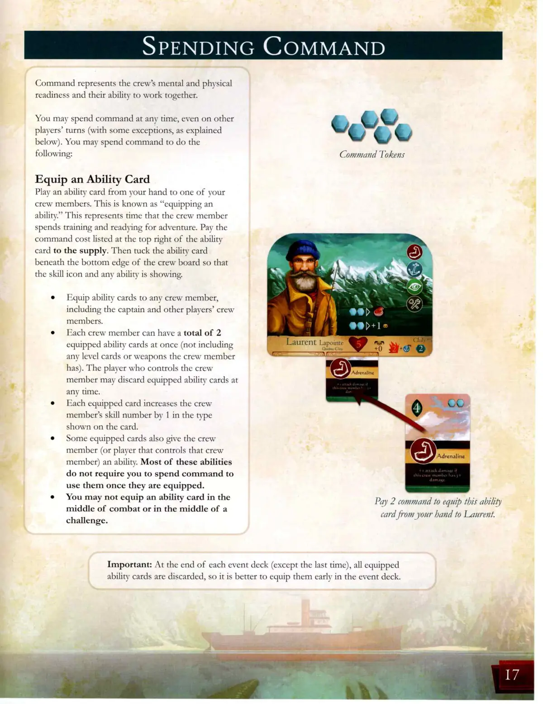
📝 第 17 页 AI 机翻对照（点击展开）
消耗指令
指令代表船员的心理和身体准备状态，以及他们协同工作的能力。
你可以在任何时候消耗指令，甚至在其他玩家的回合（有一些例外，如下文所述）。你可以消耗指令来执行以下操作：
指令指示物
装备能力卡
从你的手牌中打出一张能力牌到你的船员之一。这被称为"装备能力"。这代表船员花时间进行冒险训练和准备。将能力牌右上角列出的指令成本支付到供给区。然后将能力牌折叠在船版底部边缘，使技能图标和任何能力都显示出来。
可以将能力牌装备到任何船员，包括船长和其他玩家的船员。
+1攻击伤害，如果此船员造成攻击伤害。
每个船员可以同时装备最多2张能力牌（不包括船员拥有的任何等级牌或武器）。控制该船员的玩家可以在任何时候弃置已装备的能力牌。
每张已装备的卡牌将根据卡牌上显示的类型，将船员的技能数值提高1。
一些已装备的卡牌也给船员（或控制该船员的玩家）提供能力。这些能力中的大多数在装备后不需要你消耗指令即可使用。
你不能在战斗过程中或挑战过程中装备能力牌。
重要提示：在每个事件牌组结束时（最后一次除外），所有已装备的能力牌都会被弃置，因此在事件牌组早期装备它们会更好。
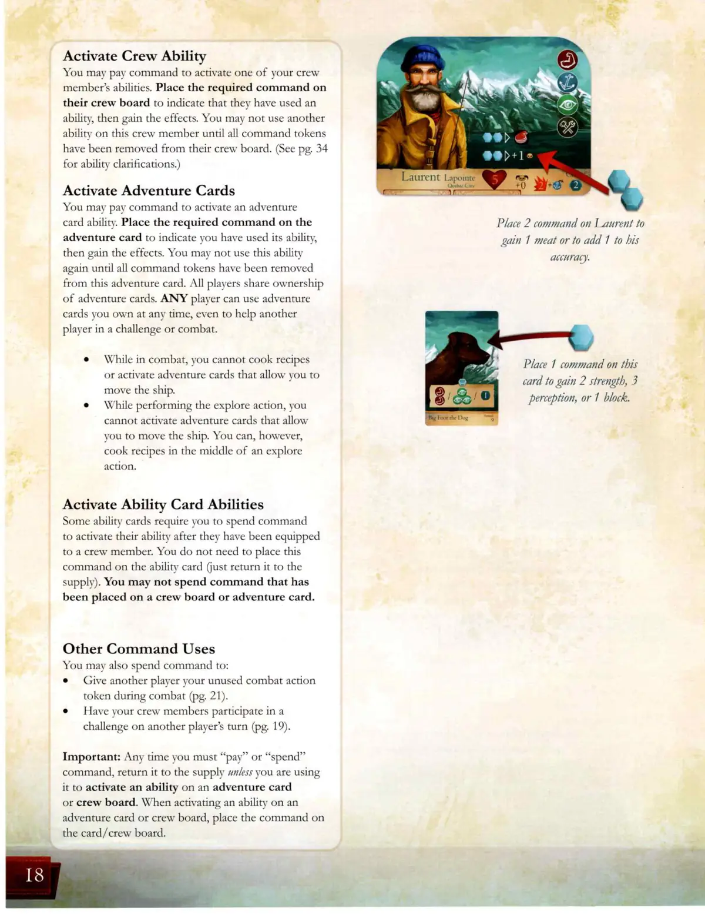
📝 第 18 页 AI 机翻对照（点击展开）
激活船员能力
你可以支付指令来激活你的一名船员的能力。将所需的指令放置在其船员版图上，表明他们已使用过一项能力，然后获得效果。在所有指令指示物从其船员版图上移除之前，你不能再次使用该船员的其他能力。（参见第34页 D+1o 的能力说明。）
激活冒险卡牌能力
你可以支付指令来激活一张冒险卡牌的能力。将所需的指令放置在冒险卡牌上，表明你已使用过其能力，然后获得效果。在所有指令指示物从这张冒险卡牌上移除之前，你不能再次使用此能力。所有玩家共享冒险卡牌的所有权。任何玩家都可以随时使用你拥有的冒险卡牌，甚至可以在挑战或战斗中帮助其他玩家。
在战斗中，你不能烹饪食谱或激活允许你移动飞船的冒险卡牌。 在执行探索行动时，你不能激活允许你移动飞船的冒险卡牌。然而，你可以在探索行动中途烹饪食谱。
激活能力卡牌能力
一些能力卡牌要求你在装备到船员后支付指令来激活其能力。你不需要将此指令放置在能力卡牌上（只需将其放回供应区）。你不能已经放置在船员版图或冒险卡牌上的指令。
其他指令用途
你也可以花费指令来：
在战斗期间将你未使用的战斗行动指示物给予另一名玩家（第21页）。
让你的船员在另一名玩家的回合中参与挑战（第19页）。
重要：任何时候你必须"支付"或"花费"指令时，除非你是在激活冒险卡牌或船员版图上的能力，否则将其放回供应区。当激活冒险卡牌或船员版图上的能力时，将指令放置在卡牌/船员版图上。
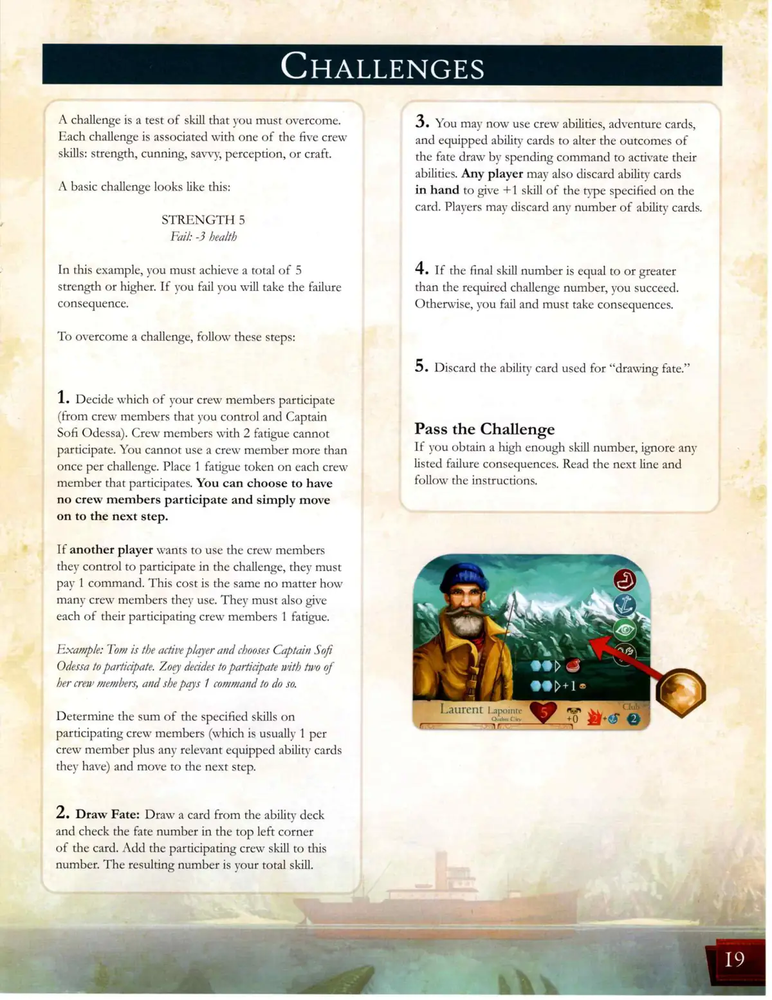
📝 第 19 页 AI 机翻对照（点击展开）
挑战
挑战是一项你必须克服的技能测试。每个挑战与五种船员技能之一相关：力量(strength)、狡猾(cunning)、机敏(savvy)、坚韧(tenacity)或魅力(charisma)。一个基础挑战看起来像这样：
力量 5
失败：-3健康值
在这个例子中，你必须达到5点或更高的力量总和。如果你失败，你将承受失败后果。
要克服挑战，请遵循以下步骤：
- 决定你的哪些船员参与挑战（由你控制和船长Sofi Odessa控制的船员）。有2点疲劳的船员不能参与。你不能在同一个挑战中多次使用同一个船员。在每个参与的船员上放置1个疲劳指示物。你可以选择不使用任何船员参与，直接进入下一步。
- 抽运命：从能力牌库中抽一张牌，并检查牌左上角的运命数字。将参与船员的技能加到这个数字上。得到的数字就是你的总技能值。
- 你现在可以使用船员能力、冒险牌和已装备的能力牌，通过花费指令来激活它们能力，以改变运命抽牌的结果。任何玩家也可以弃掉手牌中的能力牌，给予+1点卡片上指定类型的能力。玩家可以弃掉任意数量的能力牌。
- 如果最终技能数字等于或大于所需的挑战数字，你就成功。否则，你失败并必须承受后果。
- 弃掉用于"抽运命"的能力牌（来自你控制和船长Sofi Odessa的船员）。
如果你获得了足够高的技能数字，忽略任何列出的失败后果。阅读下一行并遵循说明。
如果其他玩家想使用他们控制的船员参与挑战，他们必须支付1点指令。无论他们使用多少船员，这个成本都是相同的。他们还必须给每个参与的船员1点疲劳。
示例：Tom是当前玩家，他选择船长Sofi Odessa参与。Zoey决定用她的两个船员参与，她为此支付1点指令。
Laurent Lapointe 2 Club 确定参与船员的指定技能总和（通常是每个船员1点，加上他们拥有的任何相关已装备能力牌），然后进入下一步。
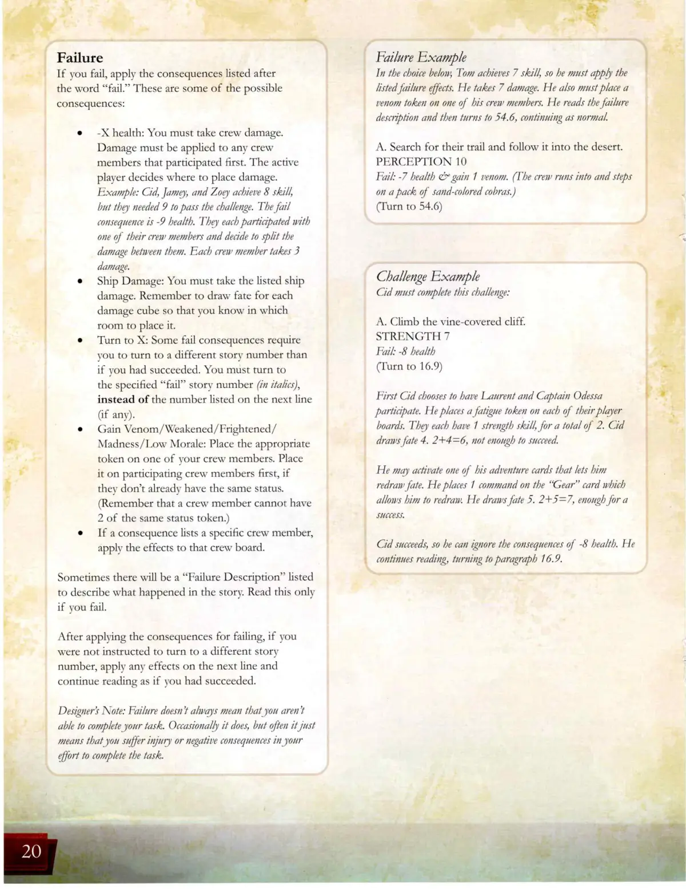
📝 第 20 页 AI 机翻对照（点击展开）
失败 失败示例
如果你失败，应用"失败"一词后列出的后果。以下是一些可能的失败效果。他获得7点伤害，还必须在一个船员身上放置一个毒液指示物。他阅读失败描述，然后转向54.6，继续正常进行。
-X生命值：你必须承受船员伤害。
伤害必须优先应用于参与挑战的任何船员。当前玩家决定放置伤害的位置。
示例：Cid、Jamey和Zoey达成了技能检定，但他们需要9点才能通过挑战。失败后果是-9生命值。他们每人使用一个船员参与，并决定在他们之间分摊伤害。每个船员承受3点伤害。
挑战示例
Cid必须完成这个挑战：
A. 爬上覆盖着藤蔓的悬崖。
力量7
失败：-8生命值
（转向16.9）
首先，Cid选择让Laurent和Captain Odessa参与。他在他们的玩家板块上各放置一个疲劳指示物。他们各自有1点力量技能，总共2点。Cid抽取命运骰4.2+4=6，不足以成功。
他可以激活他的冒险卡中的一张，让他可以重抽命运骰。他在"齿轮"卡上放置1个指令，这让他可以重抽。他抽取命运骰5.2+5=7，足以成功。
Cid成功了，因此他可以忽略8点伤害的后果。他继续阅读，转向段落16.9。
有时会列有"失败描述"，用于描述故事中发生的事情。仅在失败时阅读此内容。
应用失败的后果后，如果没有被指示转向不同的故事编号，则应用下一行的任何效果，并继续阅读，仿佛你成功了一样。
设计师注：失败并不总是意味着你无法完成任务，而是意味着你在努力完成任务时会受伤或遭受负面后果。
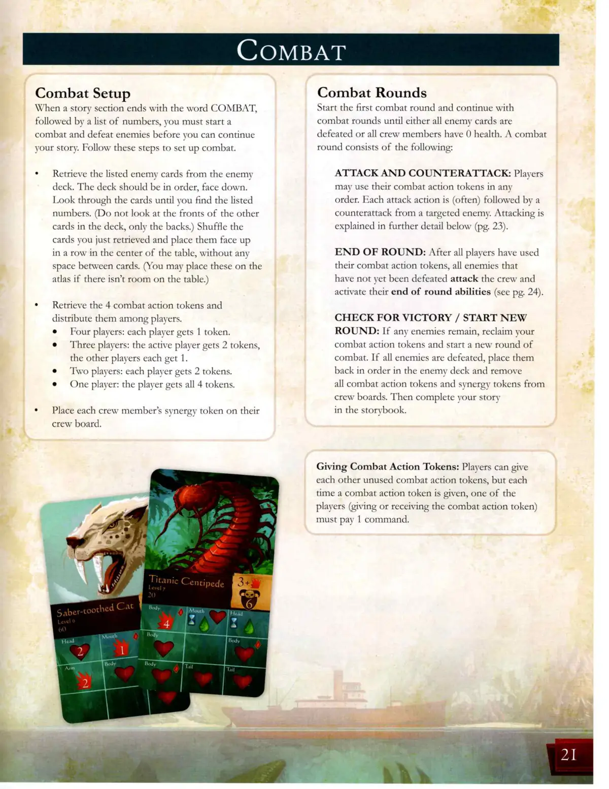
📝 第 21 页 AI 机翻对照（点击展开）
战斗
战斗设置 战斗回合
当一个故事章节以"战斗"一词结束， 开始第一个战斗回合并继续进行
后跟一串数字时，你必须开始一场 战斗回合，直到所有敌方卡牌被
战斗并击败敌人，然后才能继续 击败或所有船员生命值为0。一个战斗
你的故事。按照以下步骤设置战斗。 回合包括以下内容：
从敌方牌库中取出列出的敌方卡牌。 攻击与反击：玩家
牌库应按顺序放置，牌面朝下。 可以按任意顺序使用他们的战斗行动指示物。
查看卡牌直到找到列出的 每个攻击行动（通常）会遭到
数字。不要查看牌库中其他卡牌的 目标敌人的反击。攻击将在下文
牌面，只看背面。）将你刚刚 详细说明（第23页）。
取出的卡牌洗牌，然后正面朝上
在桌子中央排成一行，卡牌之间不留 回合结束：在所有玩家都使用
空隙。如果没有桌子空间，可以放在 他们的战斗行动指示物后，所有尚未
地图上。 被击败的敌人会攻击船员并
激活他们的回合结束能力（见第24页）。
取出4个战斗行动指示物并 检查胜利/开始新
分发给玩家。 回合：如果还有敌人剩余，收回你的
四名玩家：每位玩家获得1个指示物。 战斗行动指示物并开始新一轮战斗。
三名玩家：当前玩家获得2个指示物， 如果所有敌人都被击败，将它们
其他每位玩家各获得1个。 按顺序放回敌方牌库，并从
船员版图上移除所有战斗行动指示物和
两名玩家：每位玩家获得2个指示物。 协同指示物。然后在故事书中完成
你的故事。
一名玩家：该玩家获得全部4个指示物。
将每位船员的协同指示物放在他们 给予战斗行动指示物：玩家可以互相
的船员版图上。 给予未使用的战斗行动指示物，但每次
给予战斗行动指示物时，其中一名玩家
（给予或接收战斗行动指示物者）
必须支付1点指挥。
巨型蜈蚣
7级。
身体 剑齿猫 嘴部
6级
嘴部 身体 头部
身体 身体 手臂 尾部
尾部
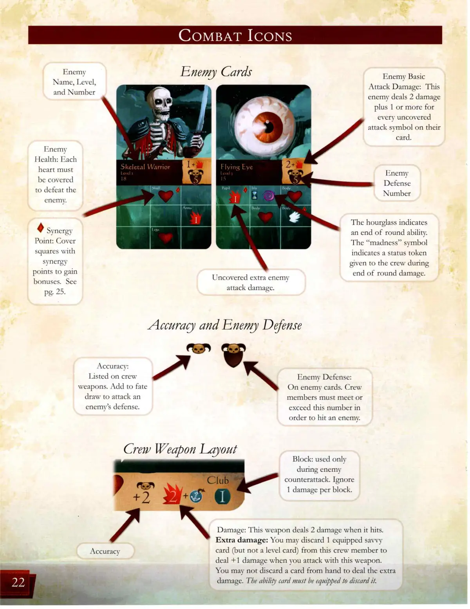
📝 第 22 页 AI 机翻对照（点击展开）
战斗图标
敌人 敌人卡牌
敌人基础
名称、等级、 攻击伤害：此
和数量 敌人造成2点伤害
加上1点或更多，对应其
卡牌上每张未覆盖的
攻击符号。
敌人
生命值：每个
飞行之眼 心脏必须被覆盖
等级2 骷髅战士
18 15 才能击败
防御 瞳孔 数量
敌人。
身体
沙漏表示
协同 回合结束能力。
分数：用协同
点数覆盖 在回合结束时船员会
方块获得 获得一个状态指示物。
奖励。见
第25页。
精准度和敌人防御
精准度：
列在船员 武器上。加入命运
抽取以攻击 敌人卡牌。船员
敌人的防御。 成员必须达到或
超过此数值才能
击中敌人。
船员武器布局
格挡：仅用于
敌人
反击。每格挡
2 1点伤害。
+2
伤害：此武器命中时造成2点伤害。
额外伤害：你可以弃掉1张已装备的
精准度 卡牌（但不能是等级卡）从该船员身上，
以在攻击时
造成+1点伤害。
你不能从手牌中弃牌来造成额外
22 伤害。能力卡必须已装备才能弃掉它。
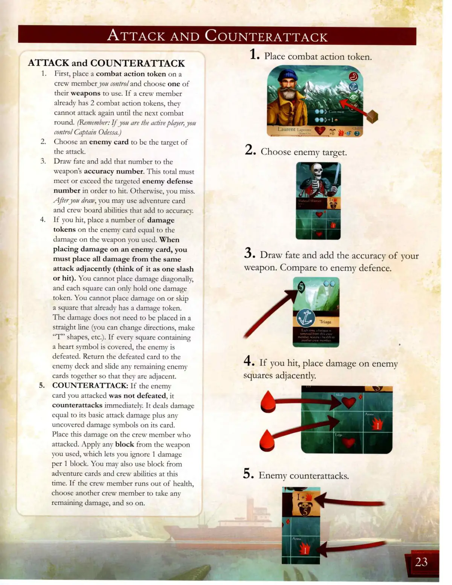
📝 第 23 页 AI 机翻对照（点击展开）
攻击与反击
- 放置战斗行动指示物。
首先，在你控制的船员身上放置一个战斗行动指示物，并选择他们的一件武器使用。如果一个船员已经有2个战斗行动指示物，他们不能在下一个战斗回合前再次攻击。记住：如果你是主动玩家，你控制着奥德萨船长。
- 选择一张敌方卡牌作为攻击目标。
- 抽取命运骰，并将数字加到武器的准确度数字上。这个总和必须等于或超过目标敌人的防御数值才能命中。否则，你未命中。抽取后，你可以使用冒险卡牌和船员版图能力来增加准确度。
- 如果命中，在你使用的武器上放置与伤害数值相等的伤害指示物在敌方卡牌上。当在敌方卡牌上放置伤害时，你必须将同一攻击的所有伤害相邻放置（想象成一次挥砍或击中）。你不能对角线放置伤害，每个格子只能放置一个伤害指示物。你不能在有伤害指示物的格子上放置或跳过伤害。伤害不需要直线放置（你可以改变方向，形成"T"形等）。如果包含心形符号的每个格子都被覆盖，敌人被击败。将被打败的卡牌放回敌方牌库，并将剩余的敌方卡牌滑动到一起，使它们相邻。
反击：如果你攻击的敌方卡牌未被击败，它会立即反击。它造成的伤害等于其基础攻击伤害加上其卡牌上任何未覆盖的伤害符号。将此伤害放置在攻击的船员身上。应用你使用的武器提供的格挡，每1点格挡可以忽略1点伤害。此时你也可以使用冒险卡牌和船员能力的格挡。如果船员生命值耗尽，选择另一个船员承受剩余伤害，以此类推。
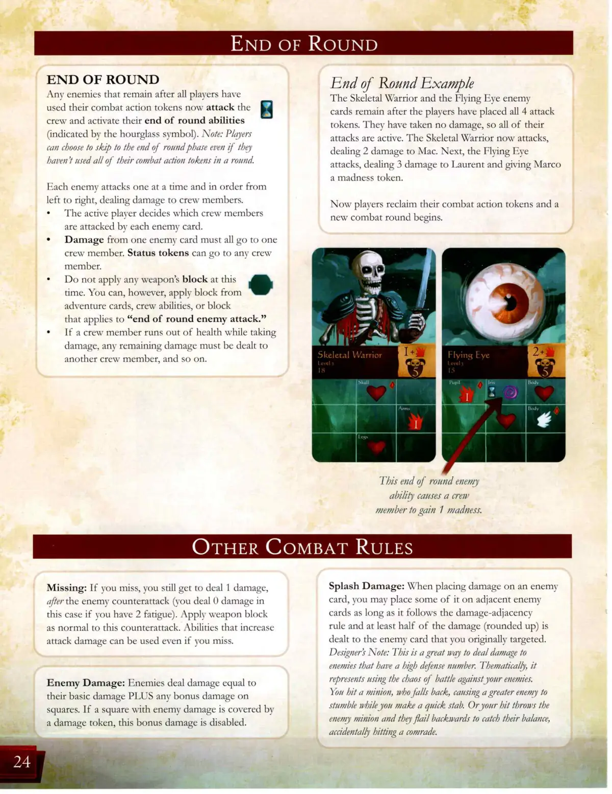
📝 第 24 页 AI 机翻对照（点击展开）
回合结束
回合结束示例
所有玩家都已使用其战斗行动指示物后， 骸骨战士和飞行眼敌人卡牌在玩家已放置所有4个攻击
仍留存的任何敌人现在攻击船员并激活其 指示物后仍然存在。他们未受到任何伤害，因此他们
回合结束能力（由沙漏符号表示）。注意：玩家 的所有攻击都处于激活状态。骸骨战士现在攻击，
可以选择跳过回合结束阶段，即使他们在 对麦克造成2点伤害。接下来，飞行眼攻击，对洛朗
一轮中并未使用完其所有战斗行动指示物。 造成3点伤害，并给马可一个疯狂指示物。
每个敌人一次一个地从左到右顺序攻击， 现在玩家收回其战斗行动指示物，新的战斗回合
对船员造成伤害。当前玩家决定每个敌人 开始。
卡牌攻击哪些船员。
来自一个敌人卡牌的伤害必须全部给一个 飞溅伤害：当在敌人卡牌上放置伤害时，你可以将
船员。状态指示物可以给任何船员。 部分伤害放置在相邻的敌人卡牌上，只要它遵循伤害
此时不要应用任何武器的格挡。但是，你可以 相邻规则，并且至少一半的伤害（向上取整）被
应用来自冒险卡牌、船员能力或适用于"回合结束 原本针对的敌人卡牌。设计师注：这是对防御值
敌人攻击"的格挡。 很高的敌人造成伤害的好方法。从主题上，它代表
利用战斗的混乱来对付你的敌人。你击中一个
如果船员在承受伤害时生命值耗尽，任何剩余 仆从，他踉跄后退，导致更大的敌人绊倒，而你
的伤害必须 dealt to 另一个船员，依此类推。 快速刺出。或者你击中敌人仆从，他们向后踉跄以
保持平衡，意外地咬到了一个同伴。
骸骨战士 飞行眼
2级 级别
18 15
这个回合结束敌人
能力导致船员
获得1个疯狂。
其他战斗规则
敌人伤害：敌人造成等于其基础伤害 失误：如果你失误，你仍然可以造成1点伤害，
加上方格上任何额外伤害的伤害。如果一个 在敌人反击之后（如果你有2点疲劳，此时你造成0点伤害）。
带有敌人伤害的方格被一个伤害指示物覆盖， 像平常一样应用武器格挡。增加攻击伤害的能力
此额外伤害将被禁用。 即使失误也可以使用。
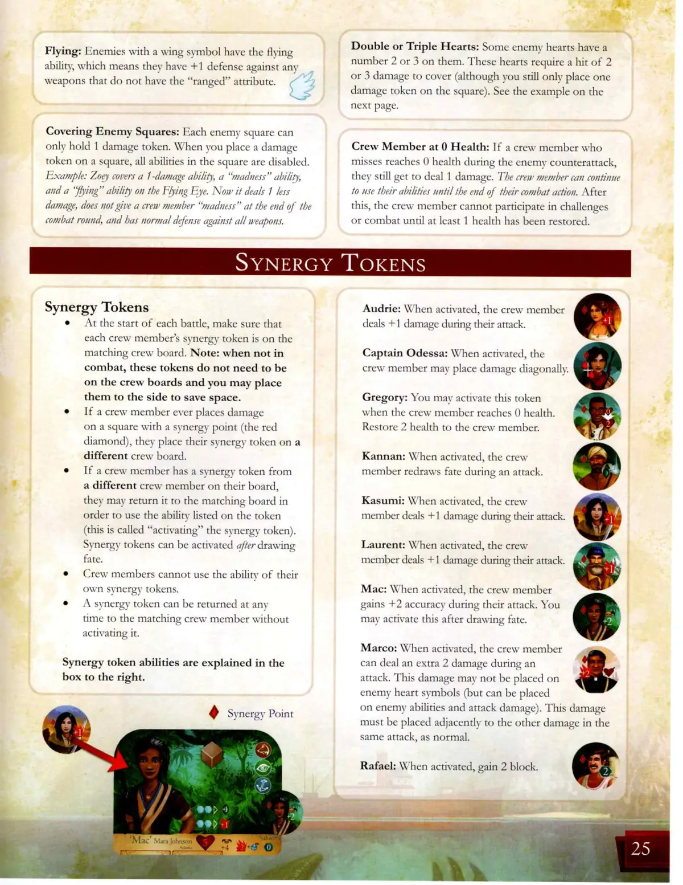
📝 第 25 页 AI 机翻对照（点击展开）
双倍或三倍心形：一些敌人心形上有数字2或3。这些心形需要造成2点或3点伤害才能覆盖（尽管你仍然只在格子上放置一个伤害指示物）。这些武器必须没有"远程"属性。
飞行：带有翅膀符号的敌人具有飞行能力，这意味着他们对任何武器都有+1防御力。
覆盖敌人格子：每个敌人格子只能容纳1个伤害指示物。当你将伤害指示物放置在格子上时，格子中的所有能力都会被禁用。
示例：佐伊覆盖了飞行之眼上的1点伤害能力、"疯狂"能力和"飞行"能力。现在它造成的伤害减少1点，在战斗结束时不会给船员"疯狂"，并且对所有武器具有正常的防御力。
船员健康值为0：如果船员在敌人反击过程中健康值降至0，他们仍然可以造成1点伤害。船员可以继续使用他们的能力，直到他们的战斗行动结束。之后，该船员无法参与挑战或战斗，直到至少恢复1点健康值。
协同指示物
在每场战斗开始时，确保每个船员的协同指示物都在对应的船员板上。注意：当不在战斗中时，这些指示物不需要放在船员板上，你可以将它们放到旁边以节省空间。
如果船员在任何带有协同点（红色菱形）的格子上放置伤害，他们会将他们的协同指示物放在另一个船员板上。
如果船员板上有来自另一个船员的协同指示物，他们可以将它放回对应的船员板以使用指示物上列出的能力（这称为"激活"协同指示物）。
协同指示物可以在抽取命运后激活。
船员不能使用自己协同指示物的能力。
协同指示物可以在任何时候被归还给对应的船员，而不需要激活它。
协同指示物的能力解释在右侧的框中。
协同点
游戏设置
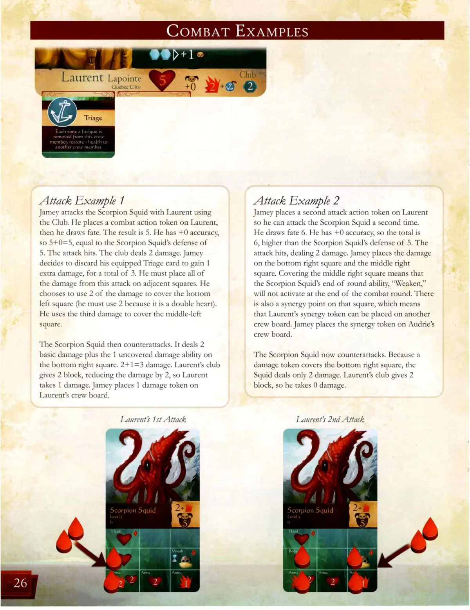
📝 第 26 页 AI 机翻对照（点击展开）
战斗示例
+<
Laurent Lapointe 俱乐部 ?
+0 魁北克市
急救队
每当移除这名船员的疲劳时，恢复另一名船员的生命值。
攻击示例1 攻击示例2
Jamey使用Laurent的俱乐部攻击蝎子鱿鱼。他在Laurent上放置了一个战斗行动指示物，然后抽取命运。结果是5。他有+0精准度，所以5+0=5，等于蝎子鱿鱼的防御5。攻击命中。俱乐部造成2点伤害。Jamey决定弃置他装备的急救队卡牌以获得1点额外伤害，总共3点。他必须将这次攻击的所有伤害放置在相邻的格子上。他选择使用2点伤害覆盖左下方的格子（他必须使用2点，因为这是一个双心格子）。他用第三点伤害覆盖左中格子。
蝎子鱿鱼随后反击。它造成2点基础伤害加上左下格子上未被覆盖的伤害能力。2+1=3点伤害。Laurent的俱乐部提供2点格挡，减少了2点伤害，所以Laurent受到1点伤害。Jamey在Laurent的船员版图上放置1个伤害指示物。
Laurent的第一次攻击 Laurent的第二次攻击
蝎子鱿鱼 蝎子鱿鱼
等级 等级
头部 头部
嘴巴 身体
手臂
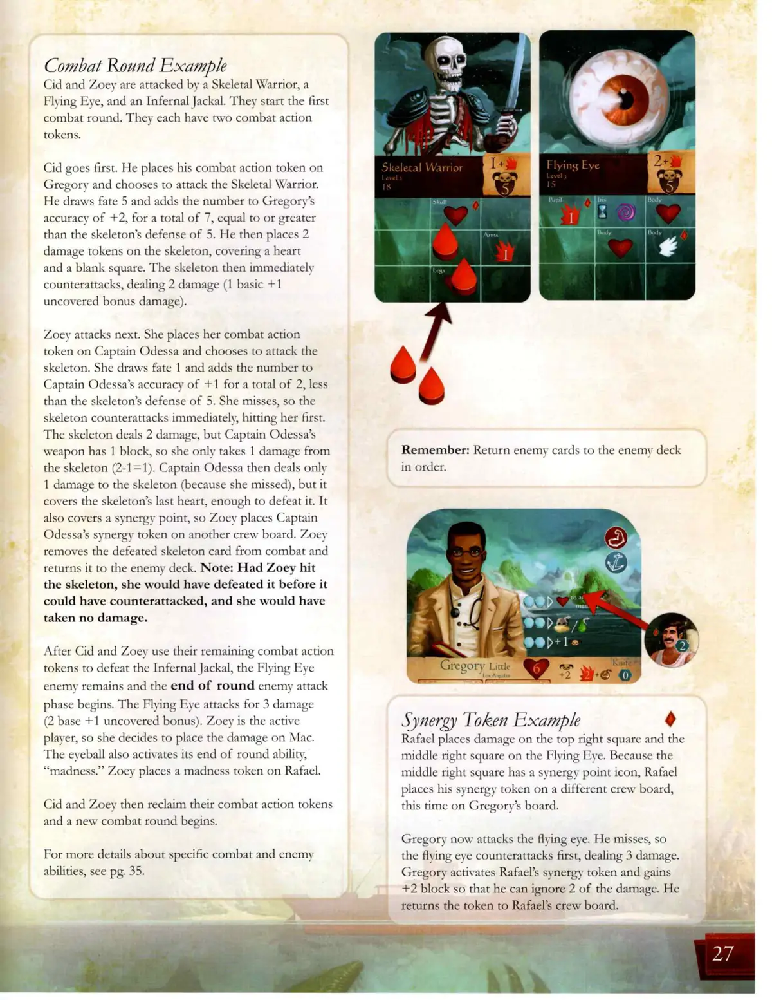
📝 第 27 页 AI 机翻对照（点击展开）
战斗回合示例
席德（Cid）和佐伊（Zoey）被一个骷髅战士（Skeletal Warrior）、一只飞眼（Flying Eye）和一只地狱豺狼（Infernal Jackal）攻击。他们开始第一个战斗回合。他们每人有两个战斗行动指示物（combat action tokens）。
飞眼（Flying Eye） 席德先行动。他将他的战斗行动指示物放在骷髅战士
等级1 等级上；格雷戈里（Gregory）并选择攻击骷髅战士。
18 15
他抽取命运牌5并将数字加到格雷戈里的 颅骨 瞳孔
精准度+2，总计为7，等于或大于 阿波格（Apog） 身体
骷髅的防御5。然后他在骷髅身上放置2 记住：将敌人卡牌返回敌人牌库
个伤害指示物，覆盖了一个心形 按顺序。
和一个空白格。骷髅立即反击，造成2点伤害（1点基础伤害+1点
未覆盖的额外伤害）。
佐伊接下来攻击。她将她的战斗行动
指示物放在奥德萨船长（Captain Odessa）上并选择攻击骷髅。她抽取命运牌1并将数字加到
奥德萨船长的精准度+1上，总计为2，小于
骷髅的防御5。她未命中，所以骷髅立即反击，先击中她。
骷髅造成2点伤害，但奥德萨船长的武器有1点格挡，
所以她只从骷髅那里受到1点伤害（2-1=1）。奥德萨船长然后只对骷髅
造成1点伤害（因为她未命中），但它覆盖了骷髅的最后一个心形，
足以击败它。它还覆盖了一个协同点，所以佐伊将奥德萨船长的协同指示物
放在另一个船员版图上。佐伊将被打败的骷髅卡牌从战斗中移除
并返回敌人牌库。注意：如果佐伊击中了骷髅，
她会在骷髅反击前就击败它，并且她将不会受到任何伤害。
OD+1 在席德和佐伊使用他们剩余的战斗行动
格雷戈里 小刀 指示物击败地狱豺狼后，飞眼
洛杉矶（Los Angeles） 敌人仍然存在，回合结束敌人攻击
阶段开始。飞眼攻击造成3点伤害
（2点基础伤害+1点未覆盖的额外伤害）。佐伊是当前
玩家，所以她决定将伤害放在麦克（Mac）身上。 飞眼也激活了它的回合结束能力，
"疯狂"（madness）。佐伊在拉斐尔（Rafael）身上放置了一个疯狂指示物。
眼球。拉斐尔将伤害放在飞眼的右上格和
中右格上。因为中右格有一个协同点图标，拉斐尔
将他的协同指示物放在另一个船员版图上，
这次是放在格雷戈里的版图上。
席德和佐伊然后收回他们的战斗行动指示物
并开始一个新的战斗回合。
格雷戈里现在攻击飞眼。他未命中，所以
飞眼先反击，造成3点伤害。 关于特定战斗和敌人
格雷戈里激活拉斐尔的协同指示物并获得+2格挡，这样他可以忽略2点伤害。他将
指示物返回拉斐尔的船员版图上。 能力的更多细节，见第35页。
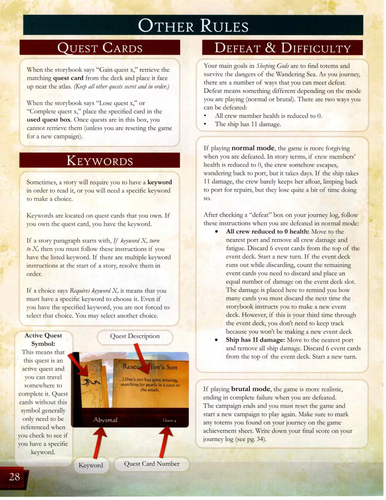
📝 第 28 页 AI 机翻对照（点击展开）
规则 神秘岛
任务卡 失败与难度
你在《沉睡之神》中的主要目标是找到图腾并 在故事书说"获得任务x"时，从牌库中找到
在漂泊之海的危险中生存。当你旅行时， 相应的任务卡并将其正面朝上放在地图册旁。（将
有几种方式可能导致你失败。 所有其他任务保持秘密并按顺序排列。）
失败的含义取决于你玩的模式 当故事书说"失去任务x"或
（普通或残酷）。有两种方式可以导致你失败： "完成任务x"，将指定的卡牌放入
所有船员健康值降至0。 已使用任务盒中。一旦任务进入这个盒子，
船只受到11点伤害。 你就无法再取回它们（除非你正在为
新战役重置游戏）。
如果玩普通模式，当你失败时游戏会更宽容。 从故事角度来说，如果船员健康值降至0，
船员会以某种方式逃脱， 船员们会慢慢走回港口，但这需要几天时间。如果船只
在港口附近徘徊，但如果船只受到11点伤害，船员们勉强
船员健康值降至0：移动到 保持着船只漂浮，蹒跚地返回港口进行维修，
最近的港口并移除所有船员伤害和 但他们为此损失了大量时间。
疲劳。从事件牌库顶部分弃6张事件牌。开始一个新回合。如果在分弃过程中事件牌库
用完，计算你还需要分弃的剩余事件牌数量，并在事件牌库格位上放置等量的伤害。
这些伤害放在这里是为了提醒你下次故事书指示你制作新事件牌库时，
你必须分弃多少张牌。然而，如果这是你第三次通过事件牌库，你不需要再追踪，
因为你不会再制作新事件牌库了。
关键词
有时，一个故事会要求你拥有一个关键词 才能阅读它，或者你需要一个特定的关键词
来做选择。 关键词位于你拥有的任务卡上。如果你拥有
如果一段故事段落以"关键词X"开头，转向X，那么 如果你拥有该任务卡，你就拥有该关键词。
如果你列出的关键词，你必须遵循这些说明。 如果一个选择说"需要关键词X"，意味着你必须
如果一段故事开头有多个关键词说明，按顺序解决。 拥有特定关键词才能选择它。即使你拥有
指定的关键词，你也不必选择那个选项。你可以选择其他选项。
活跃任务
任务描述
符号：
这意味着这是一个
活跃任务，你可以
前往某处
完成它。 救助利姆的儿子
利姆的儿子失踪了，
他正在南边的一个洞穴里
寻找珍珠。
没有此符号的卡牌通常只需要在您检查是否拥有特定关键词时被引用。
战役结束，您必须重置游戏并开始新的战役才能再次游玩。请确保在成就表上标记您在旅途中发现的任何图腾。在您的旅程日志（见第34页）上写下您的最终分数。
任务卡编号 关键词
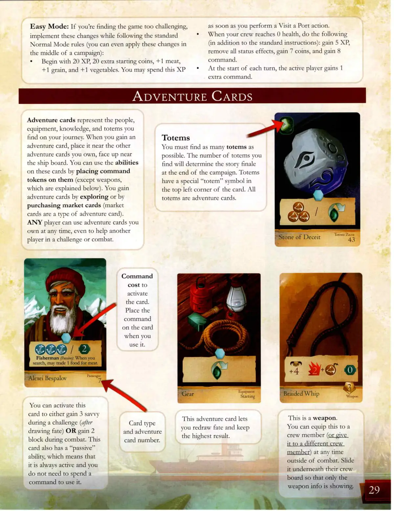
📝 第 29 页 AI 机翻对照（点击展开）
简单模式：如果你觉得游戏太具挑战性，一旦你执行了访问港口(Visit Port)行动，就实施以下变更（除了标准规则外）：获得5点经验值，移除所有状态效果，获得7枚金币，并获得8点指令。
在每回合开始时，当前玩家获得1点额外指令。
冒险卡牌
冒险卡牌代表你在旅途中遇到的人物、装备、知识和图腾。当你获得一张冒险卡牌时，将其放在你拥有的其他冒险卡牌旁边，面朝上，靠近飞船板。你可以通过在这些卡牌上放置指令指示物来使用它们的能力（武器除外，下面会解释）。你可以通过探索或购买市场卡牌（市场卡牌是一种冒险卡牌）来获得冒险卡牌。
任何玩家都可以随时使用你拥有的冒险卡牌，甚至在帮助其他玩家进行挑战或战斗时也可以。
图腾
你必须尽可能多地找到图腾。你找到的图腾数量将决定战役结束时的故事结局。图腾在卡牌左上角有一个特殊的"图腾"符号。所有图腾都是冒险卡牌。
图腾：Zacra欺骗之石 43
指令
激活卡牌的
成本。
当你使用
这张卡时，
将指令
放在卡上。
渔夫帕西雷(Pasire)：当你搜索时，可以用1点食物交换肉类。 ?
+4
乘客阿列克谢·别斯帕洛夫(Alexei Bespalov)
装备装备编织鞭起始武器
你可以激活这张卡牌，在挑战中（抽完命运后）获得3点敏锐，或者在战斗中获得2点防御。这张卡牌还有一个"被动"能力，这意味着它始终处于激活状态，你不需要花费指令来使用它。将其滑到船员的船板下方，只显示武器信息。
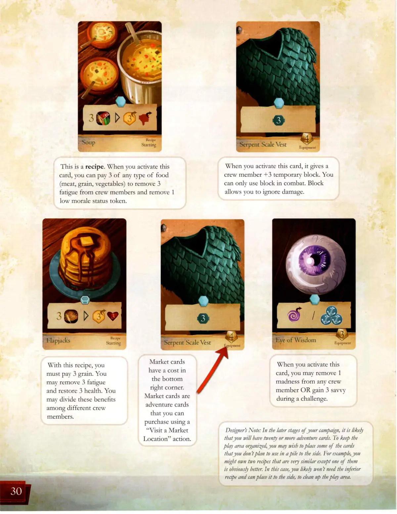
📝 第 30 页 AI 机翻对照（点击展开）
食谱 汤
起始 蛇鳞背心 装备
这是一张食谱。当你激活这张 当你激活这张卡牌时，它为船员提供+3临时护盾。你只能在战斗中使用护盾。护盾允许你忽略伤害。
卡牌时，你可以支付3任意类型食物（肉类、谷物、蔬菜）来移除3名船员的疲劳并移除1个低士气状态指示物。
煎饼 食谱 智慧之眼 起始 蛇鳞背心
装备 装备
市场卡牌在 使用这张食谱时，你必须支付3谷物。你可以移除3疲劳并恢复3点生命值。或者你可以在挑战期间获得3点机智。
右下角有成本。 你可以将这些收益分配给不同的船员。
市场卡牌是
设计师说明：在我们的战役后期，你将拥有二十张或更多的冒险卡牌。为了保持游戏区域整洁，你可能希望将一些不打算使用的卡牌放在一旁的牌堆中。例如，你可能拥有两张非常相似的食谱，除了其中一张明显更好。在这种情况下，你可能不需要那张较差的食谱，可以将其放到一旁，以清理游戏区域。
你可以使用"访问市场地点"行动购买的冒险卡牌。
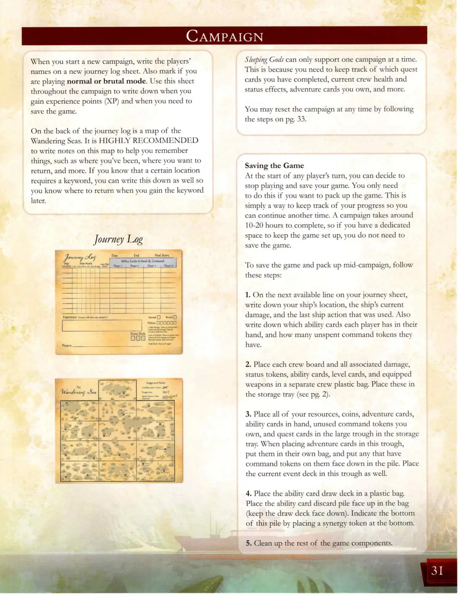
📝 第 31 页 AI 机翻对照（点击展开）
战役
《沉睡之神》一次只能支持一场战役。当你开始一场新战役时，在新的旅程记录表上写下玩家姓名。同时标记你是进行普通模式还是残酷模式。在整个战役中使用这张表记录你何时获得经验值(XP)以及何时需要保存游戏。你可以随时通过遵循第33页的步骤来重置战役。
旅程记录表的背面是流浪之海(Wandering Seas)的地图。强烈建议你在这张地图上做笔记，以帮助你记住事情，比如你去过哪里、你想返回哪里等等。如果你知道某个位置需要关键词，你也可以将其写下来，这样当你稍后获得该关键词时，你就知道该返回哪里。
保存游戏
在任何玩家的回合开始时，你可以决定停止游戏并保存你的游戏。只有当你想收拾游戏时才需要这样做。这只是为了记录你的进度，以便你可以在稍后继续。一场战役大约需要10-20小时完成，所以如果你有专门的空间来保持游戏设置，就不需要保存游戏。
旅程记录表
```
旅程记录表 骰子 结束 最终分数
可用卡牌 手牌&状态 总健康值
玩家2 大玩家
编号 经验值(当前)
事件牌库 COM
玩家
流浪之海
```
要保存游戏并在战役中途收拾，请遵循以下步骤：
- 在你的旅程表的下一个可用行上，写下你的船只位置、船只当前伤害以及最后使用的船只行动。同时写下每位玩家在其事件牌库中拥有的能力卡，以及他们拥有的未使用指挥令牌的数量。
- 将每个船员板和所有相关的伤害、状态指示物、能力卡、等级卡和装备武器分别放入单独的船员塑料袋中。将这些放入存储托盘（见第2页）。
- 将你所有的资源、金币、冒险卡、手牌中的能力卡、你拥有的未使用指挥令牌和任务牌放入存储托盘的大凹槽中。当将冒险卡放入此凹槽时，将它们放入自己的袋子中，并将任何带有指挥令牌的牌面朝下放入堆叠中。也将当前事件牌库放入此凹槽。
- 将能力牌摸牌库放入塑料袋中，将能力牌弃牌堆面朝上放入袋中（摸牌库保持面朝下）。通过在底部放置一个协同指示物来标记此堆叠的底部。
- 清理游戏的其他组件。
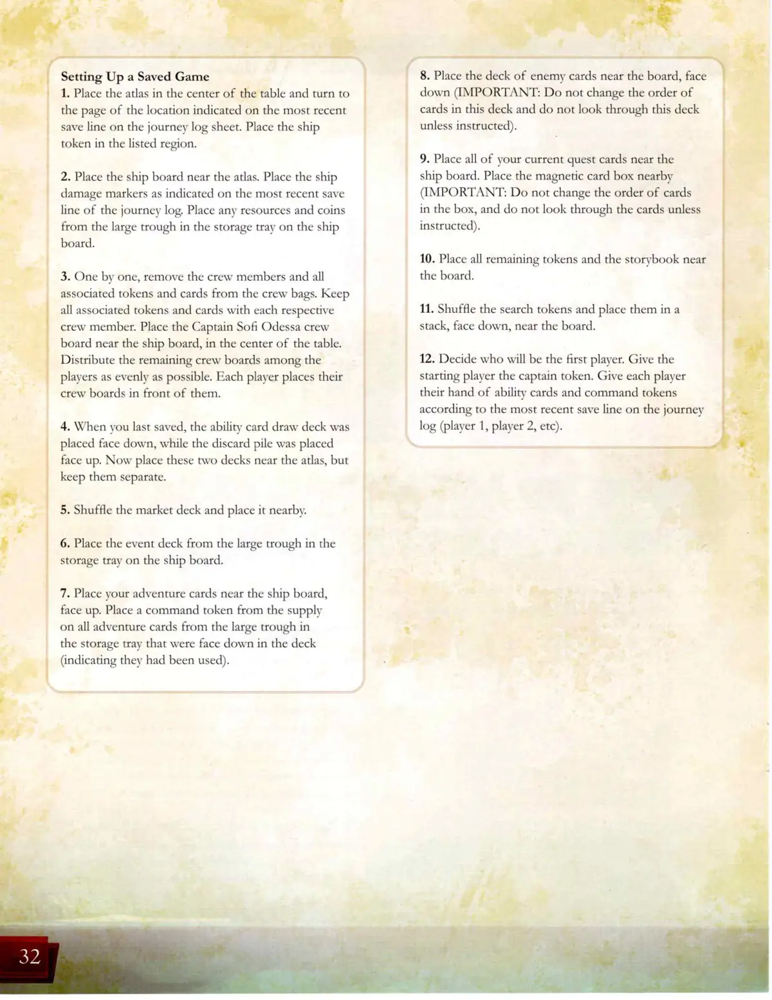
📝 第 32 页 AI 机翻对照（点击展开）
设置已保存的游戏
- 将地图集放在桌子中央，翻到旅程日志上最近一条保存线所指示的位置页面。将飞船指示物放在所列区域中。
- 将飞船板放在地图集旁边。根据旅程日志上最近的保存线，在飞船板上放置飞船损伤标记。将大型储物槽中的资源和硬币放在飞船板上。
- 逐个取出船员以及所有相关的指示物和卡牌，从船员袋中取出。将每个船员的相关指示物和卡牌放在一起。将船长索菲·奥德萨船员板放在飞船板旁边，位于桌子中央。将剩余的船员板尽可能平均地分给玩家。每位玩家将他们的船员板放在自己面前。
- 上次保存时，能力牌摸牌库是面朝下放置的，而弃牌堆是面朝上放置的。现在将这两个牌库放在地图集旁边，但保持分开。
- 洗混市场牌库并将其放在附近。
- 将大型储物槽中飞船板上的事件牌库取出放置。
- 将你的冒险牌放在飞船板旁边，面朝上。从供应区中取出一个指挥指示物，放在所有来自大型储物槽中原本是面朝下放在牌库里的冒险牌上（表示这些牌已被使用）。
- 将敌人卡牌库放在地图集旁边，面朝下。（重要：不要改变这个牌库中牌的顺序，也不要查看这个牌库，除非有指示）。
- 将你当前所有的任务牌放在飞船板旁边。将磁性卡牌盒放在附近（重要：不要改变盒中牌的顺序，也不要查看这些牌，除非有指示）。
- 将所有剩余的指示物和故事书放在版图旁边。
- 洗混搜索指示物，并将它们叠成一堆，面朝下放在版图附近。
- 决定谁将是起始玩家。将船长指示物交给起始玩家。根据旅程日志上最近的保存线，给每位玩家分发他们的能力牌手牌和指挥指示物（玩家1、玩家2等）。
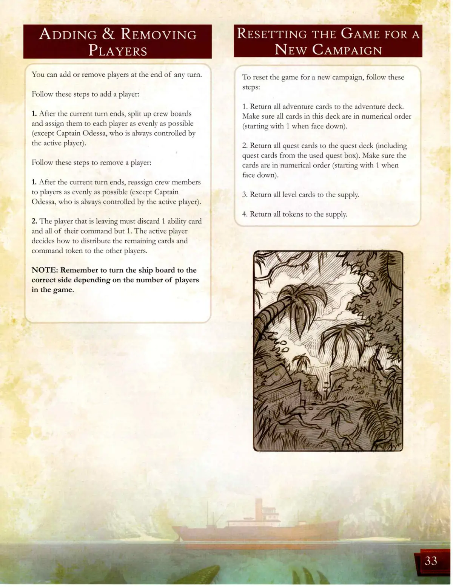
📝 第 33 页 AI 机翻对照（点击展开）
添加与移除玩家 为新战役重置游戏
您可以在任何回合结束时添加或移除玩家。要为新战役重置游戏，请遵循以下步骤：
按照以下步骤添加玩家：
- 将所有冒险卡牌归还至冒险牌库。
- 当前回合结束后，拆分船员板，并尽可能平均地分配给每位玩家（船长奥德萨始终由当前玩家控制）。
确保此牌库中的所有卡牌按数字顺序排列（面朝下时从1开始）。
按照以下步骤移除玩家：
- 当前回合结束后，尽可能平均地将船员成员重新分配给其他玩家（船长奥德萨始终由当前玩家控制）。
- 离开的玩家必须弃掉1张能力卡和除1张外的所有指挥卡。当前玩家决定如何将剩余的卡牌和指挥指示物分发给其他玩家。
注意：请根据游戏中的玩家数量，将船版翻转到正确的面。
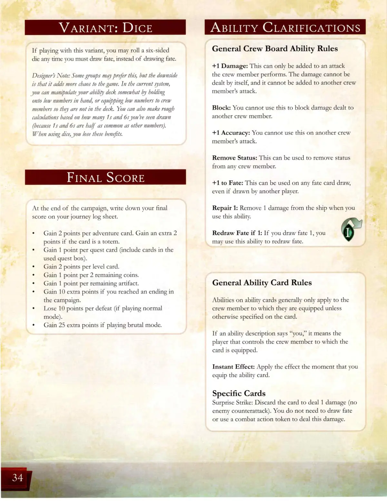
📝 第 34 页 AI 机翻对照（点击展开）
变体：骰子能力说明
如果使用此变体，当你必须抽取命运牌时，你可以掷一个六面骰子，而不是抽取命运牌。
+1伤害：这只能被添加到船员执行的攻击中。伤害不能单独造成，也不能添加到另一个船员的攻击中。
设计者注：有些小组可能更喜欢这个，但缺点是它给游戏增加了更多的cbaos。在当前系统中，你可以通过将低数字装备给船员或将低数字加入牌组来 somewhat 操控你的能力牌组。你也可以根据你看到抽到的1和6的数量进行粗略计算（因为1和6的出现频率是其他数字的一半）。使用骰子时，你会失去这些好处。
+1精准度：你不能在另一个船员的攻击上使用这个能力。
移除状态效果：这可用于移除任何船员的状态效果。
+1命运点：这可用于任何命运牌抽取，即使是由其他玩家抽取的。
修复1：当你使用此能力时，从飞船上移除1点伤害。
重抽命运1：如果你抽到命运1，你可以使用此能力重抽命运牌。
最终得分
在战役结束时，在你的旅程日志表上写下你的最终得分。
每张冒险卡获得2分。如果卡牌是图腾，额外获得2分。
每张任务卡获得1分（包括已用任务盒中的卡牌）。
每张等级卡获得2分。
每2枚剩余硬币获得1分。
每件剩余神器获得1分。
如果你在战役中达到了一个结局，额外获得10分。
每次失败扣10分（如果玩普通模式）。
如果玩残酷模式，额外获得25分。
如果能力描述说"你"，它指的是控制装备该能力卡的船员的玩家。
即时效果：在你装备能力卡的瞬间应用效果。
特定卡牌
突袭：弃掉此牌以造成1点伤害（没有敌人反击）。你不需要抽取命运牌或使用战斗行动指示物来造成此伤害。
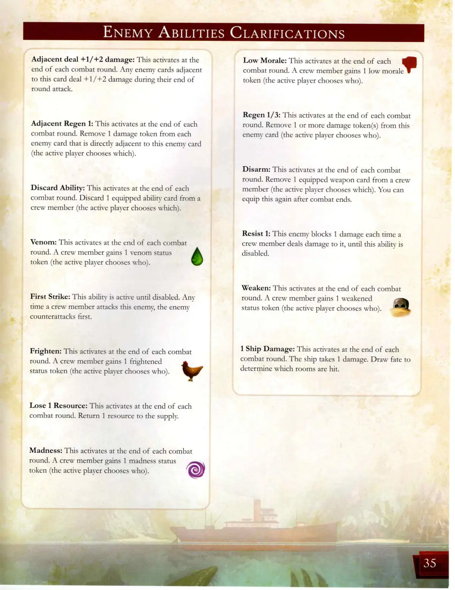
📝 第 35 页 AI 机翻对照（点击展开）
敌人能力说明
低士气：在每个战斗回合结束时激活。与此卡牌相邻的敌方卡牌在其回合结束攻击时造成+1/+2伤害。
再生1/3：在每个战斗回合结束时激活。从此敌方卡牌上移除1个或多个伤害指示物（当前玩家选择移除多少）。
相邻再生1：在每个战斗回合结束时激活。从此敌方卡牌直接相邻的每个敌方卡牌上移除1个伤害指示物（当前玩家选择移除哪个）。
解除武装：在每个战斗回合结束时激活。从一名船员身上移除1张已装备的武器卡牌（当前玩家选择移除谁的）。你可以在战斗结束后再次装备它。
弃牌能力：在每个战斗回合结束时激活。从一名船员身上弃置1张已装备的能力卡牌（当前玩家选择弃置谁的）。
抵抗1：此敌人每次船员对其造成伤害时，会阻挡1点伤害，直到此能力被禁用。
毒液：在每个战斗回合结束时激活。一名船员获得1个毒液状态指示物（当前玩家选择谁）。
削弱：在每个战斗回合结束时激活。一名船员获得1个削弱状态指示物（当前玩家选择谁）。
先攻：此能力在被禁用前一直有效。每当船员攻击此敌人时，敌人会先反击。
1点飞船伤害：在每个战斗回合结束时激活。飞船受到1点伤害。抽取命运以确定哪些房间被击中。
失去1个资源：在每个战斗回合结束时激活。将1个资源返还到供给区。
疯狂：在每个战斗回合结束时激活。一名船员获得1个疯狂状态指示物（当前玩家选择谁）。
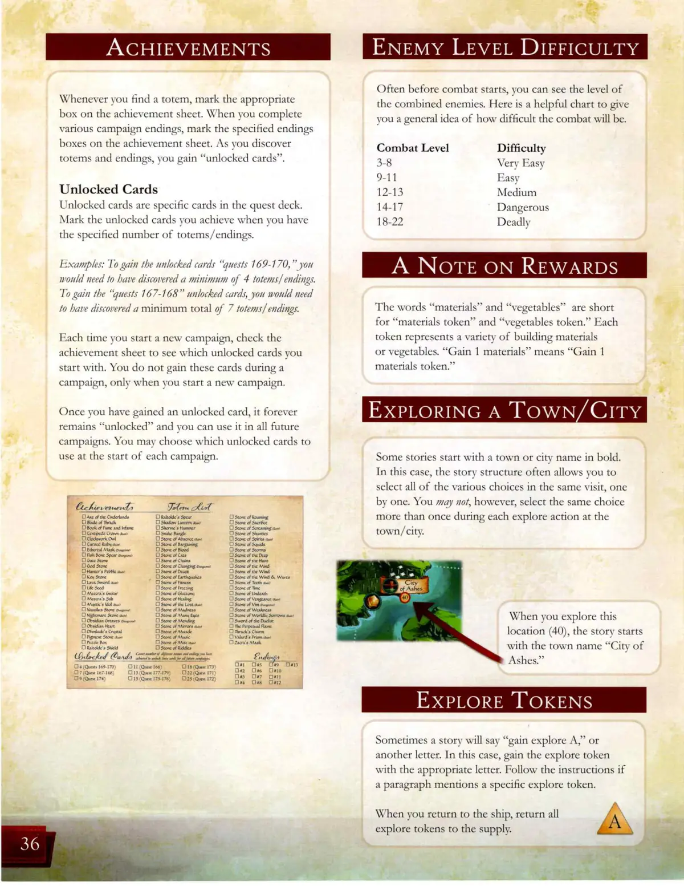
📝 第 36 页 AI 机翻对照（点击展开）
成就 敌人等级难度
通常在战斗开始前，你可以看到组合敌人的等级。这里有一个有用的图表，让你大致了解战斗的难度等级。
难度 战斗等级
非常简单 3-8
9-11 简单
12-13 中等
14-17 危险
18-22 致命
关于奖励的说明
"材料"和"蔬菜"是"材料指示物"和"蔬菜指示物"的简称。每个指示物代表各种建筑材料或蔬菜。"获得1材料"意味着"获得1个材料指示物"。
要获得"任务167-168"的解锁卡牌，你需要发现至少4个图腾/结局。
要获得"任务167-168"的解锁卡牌，你需要发现至少总共7个图腾/结局。
每次开始一个新战役时，查看成就表，看看你可以从哪些解锁卡牌开始。你在战役期间不会获得这些卡牌，只会在开始新战役时获得。
一旦你获得了解锁卡牌，它将永远保持"解锁"状态，你可以在所有未来的战役中使用它。你可以在每个战役开始时选择使用哪些解锁卡牌。
探索城镇/城市
有些故事以粗体显示的城镇或城市名称开始。在这种情况下，故事结构通常允许你在同一次访问中逐一选择所有不同的选择。然而，在每次探索城镇/城市的行动中，你不能选择相同的选项超过一次。
当你探索这个地点(40)时，故事开始
探索指示物
有时故事会说"获得探索A，或其他字母"。在这种情况下，获得带有相应字母的探索指示物。如果段落提到了特定的探索指示物，请遵循其说明。
当你返回飞船时，将所有探索指示物归还到供应区。
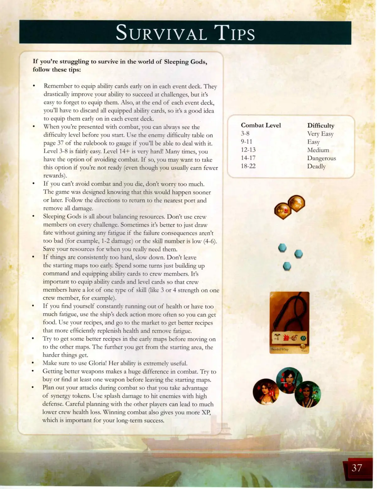
📝 第 37 页 AI 机翻对照（点击展开）
生存技巧
如果你在《Sleeping Gods》的世界中挣扎求生，请遵循以下提示：
记得在每个事件牌库早期就装备能力卡。它们能显著提高你应对挑战的成功率，但很容易忘记装备它们。此外，在每个事件牌库结束时，你将不得不弃掉所有已装备的能力卡，因此在每个事件牌库早期装备它们是个好主意。
战斗难度等级
当你面对战斗时，你始终可以在开始前看到难度等级。使用规则书第37页的敌人难度表来判断你是否能够应对。等级3-8相当容易。等级14+非常困难！很多时候，你有避免战斗的选择。如果是这样，如果你还没准备好，你可能想要选择这个选项（尽管你通常获得的奖励更少）。
如果你无法避免战斗并且死亡了，不要太担心。游戏在设计时就考虑到这种情况迟早会发生。按照指示返回最近的港口并移除所有伤害。
《Sleeping Gods》的核心在于平衡资源。不要在每个挑战上都使用船员。有时候，如果失败后果不太严重（例如，1-2点伤害）或技能数值较低（4-6），最好只是抽取命运而不获得任何疲劳。将资源留到真正需要的时候使用。
如果事情一直太难，就放慢脚步。不要过早离开起始地图。花几个回合来积累指令并给船员装备能力卡。装备能力卡和等级卡很重要，这样船员就能拥有大量同类型技能，比如在一个船员身上拥有3点或4点力量。
如果你发现自己经常健康值耗尽或疲劳过多，更频繁地使用船只的牌库行动，这样你就能更有效地恢复健康并消除疲劳。
在前往其他地图之前，尽量在早期地图中获得一些更好的配方。你离起始区域越远，事情就会变得越困难。
确保使用Gloria！她的能力极其有用。获得更好的武器对战斗有很大影响。尝试在离开起始地图前至少购买或找到一件武器。
在战斗中规划你的攻击，以便利用协同指示物。使用溅射伤害来攻击高防御的敌人。与其他玩家谨慎规划可以大大减少船员的健康损失。赢得战斗也能给你更多XP，这对你的长期成功很重要。
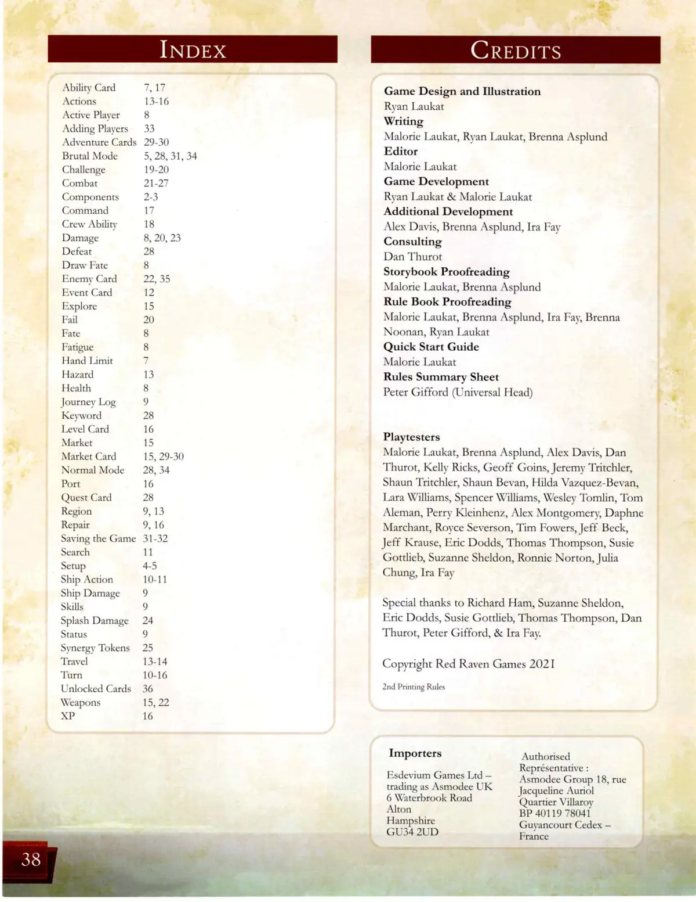
📝 第 38 页 AI 机翻对照（点击展开）
索引 致谢
能力卡 7,17 游戏设计与插画
行动 13-16 Ryan Laukat
活跃玩家 8 文字撰写
添加玩家 33 Malorie Laukat, Ryan Laukat, Brenna Asplund
冒险卡 29-30
编辑 残酷模式 5,28,31,34
挑战 19-20 Malorie Laukat
战斗 21-27 游戏开发
组件 2-3 Ryan Laukat & Malorie Laukat
指令 17 额外开发
船员能力 18 Alex Davis, Brenna Asplund, Ira Fay
伤害 8,20,23 咨询
击败 28 Dan Thurot
命运抽取 8 故事书校对
敌人卡 22,35
Malorie Laukat, Brenna Asplund 事件卡 12
规则书校对 探索 15
失败 Malorie Laukat, Brenna Asplund, Ira Fay, Brenna 20
命运 8 Noonan, Ryan Laukat
疲劳 8 快速入门指南
手牌上限 7 Malorie Laukat
危险 13 规则摘要表
生命值 8 Peter Gifford (Universal Head)
旅程日志 9
关键词 28
等级卡 16 测试玩家
市场 15
Malorie Laukat, Brenna Asplund, Alex Davis, Dan 市场卡 15,29-30
Thurot, Kelly Ricks, Geoff Goins, Jeremy Tritchler, 普通模式 28,34
Shaun Tritchler, Shaun Bevan, Hilda Vazquez-Bevan, 港口 16
Lara Williams, Spencer Williams, Wesley Tomlin, Tom 任务卡 28
9,13 区域 Aleman, Perry Kleinhenz, Alex Montgomery, Daphne
修理 9,16 Marchant, Royce Severson, Tim Fowers, Jeff Beck,
保存游戏 31-32 Jeff Krause, Eric Dodds, Thomas Thompson, Susie
搜索 11 Gottlieb, Suzanne Sheldon, Ronnie Norton, Jula
设置 4-5
10-11 Chung, Ira Fay 船只行动
船只伤害 9
技能 9 特别感谢 Richard Ham, Suzanne Sheldon,
溅射伤害 24 Eric Dodds, Susie Gottlieb, Thomas Thompson, Dan
状态 9 Thurot, Peter Gifford & Ira Fay.
协同指示物 25
旅行 13-14 Copyright Red Raven Games 2021
回合 10-16
第二版规则 解锁卡牌 36
武器 15,22
XP 16
进口商 授权
代表: Esdevium Games Ltd-
Asmodee Group 18, rue
以 Asmodee UK 名义经营 Jacqueline Auriol
6 Waterbrook Road Quartier Villaroy
Alton BP4011978041
Hampshire Guyancourt Cedex--
GU342UD France
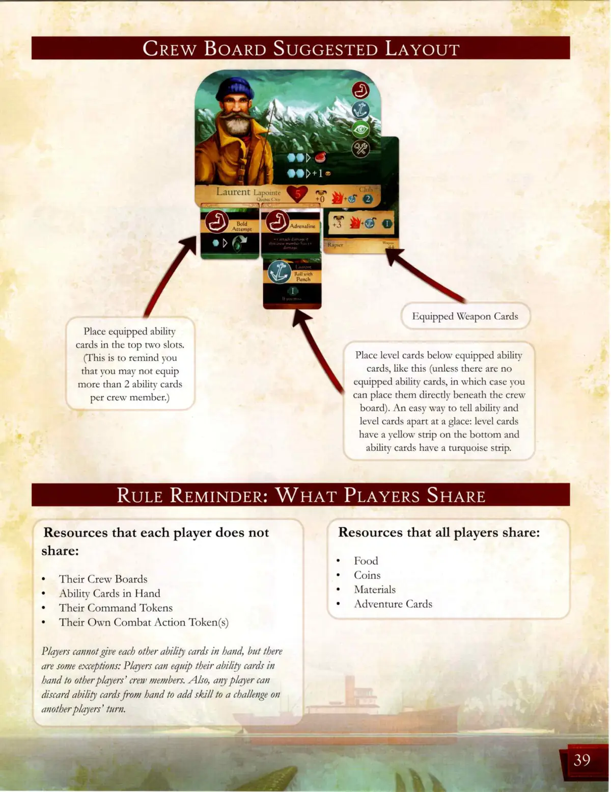
📝 第 39 页 AI 机翻对照（点击展开）
船员板建议布局
+1e
Laurent Lapointe Club
QucbecCiry
Bold Adrenaline Attempt
1artack dam.sgeif Rapicr
damage.
aurent Rollwith
Punch
已装备武器卡牌
将已装备能力卡牌放置在顶部两个槽位中。
（这是为了提醒你，你不能装备超过2张能力卡
每个船员。）一个简单的方法是快速区分能力卡和等级卡：等级卡底部有黄色条带，能力卡有青绿色条带。
规则提醒：玩家共享内容
每个玩家不共享的资源： 所有玩家共享的资源：
食物 他们的船员板
材料 硬币
冒险卡 手牌中的能力卡
他们自己的行动令牌 手牌中的能力卡
他们自己的战斗行动令牌(们) 他们的指挥令牌
玩家不能互相给予手牌中的能力卡，但他们可以将手牌中的能力卡交给其他玩家的船员。此外，任何玩家都可以在另一玩家的回合中弃掉手牌中的能力卡，以增加挑战的技能。
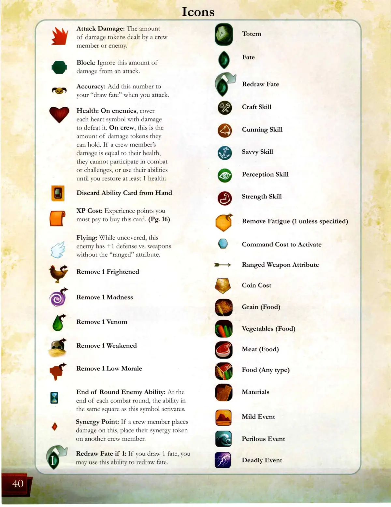
📝 第 40 页 AI 机翻对照（点击展开）
图标
攻击伤害：船员或敌人造成的伤害标记数量。
图腾 命中：忽略攻击中此数量的伤害。
命运重抽 命中值：攻击时将此数值加到你的"抽取命运值"中。
工艺技能 生命值：对敌人，用伤害标记覆盖每个心形符号来击败它。对船员，这是他们可以持有的伤害标记数量。如果船员的伤害值等于其生命值，他们不能参与战斗或挑战，或使用其能力，直到你至少恢复1点生命值。
从手牌弃掉能力卡 等级成本：你必须支付购买此卡牌的经验值。(第16页)
飞行：当未被覆盖时，此敌人的防御值+1，对抗没有"远程"属性的武器。
远程武器属性 指挥激活成本
移除1点恐惧 硬币成本
移除1点疯狂 谷物(食物)
移除1点毒素 蔬菜(食物)
移除1点虚弱状态 肉类(食物)
移除1点低士气 食物(任何类型)
回合结束敌人能力：在每个战斗回合结束时，与此符号在同一格子的能力被激活。
普通事件 协同点：如果船员在此处造成伤害，将他们的协同标记放在另一名船员身上。
危险事件 抽取命运值如果1：如果你抽取1点命运值，你可以使用此能力重抽命运值。
致命事件